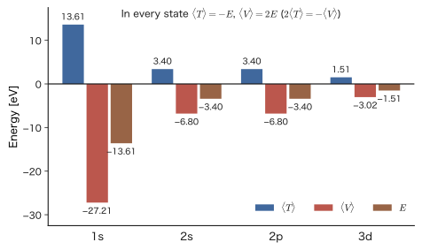
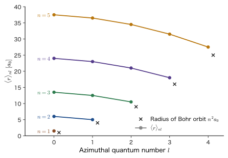
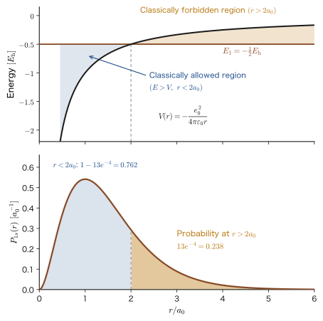
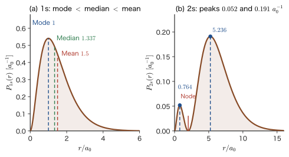

Chapter 17The Hydrogen Atom (3) — Where Is the Electron?
In Bohr's atomic model (Chapter 5, Section 5.3), the electron in a hydrogen atom moved around the nucleus in a circle at a distance of $a_0=52.9\ \mathrm{pm}$ and at a speed of $2.19\times10^{6}\ \mathrm{m}$ per second. This is a planet-like picture, in which both the radius and the speed have definite values. Yet no such “orbit” appears in the wave function $\psi_{nlm}(r,\theta,\varphi)$ that we obtained in the previous two chapters by solving the Schrödinger equation. In accordance with the Born interpretation (Chapter 8, Section 8.1), all that the wave function tells us is the probability distribution $\lvert\psi\rvert^2$ for finding the electron. Consequently, the naive questions “Where is the electron?” and “How fast is it moving?” cannot be answered with a single number. What we can answer are the expectation values (mean values) computed from the probability distribution, and the positions of the peaks of the distribution.
In this chapter, for states of the hydrogen atom such as 1s, 2s, 2p, 3s, and 3d, we find the kinetic energy $\expval{T}$, the potential energy $\expval{V}$, the square of the momentum $\expval{p^2}$, and the radius $\expval{r}$, computing the integrals one line at a time. We then find that the relations obtained classically in the Bohr model—the kinetic energy is the total energy with its sign reversed, and the potential energy is exactly twice the total energy—hold in exactly the same form for the quantum-mechanical expectation values. This is a consequence of the virial theorem. At the same time, differences from classical mechanics come into view. The electron's speed (more precisely, the root-mean-square magnitude of the momentum) is about $1/137$ of the speed of light, but in atoms of large atomic number it exceeds half the speed of light, which is connected to why gold is yellow. Moreover, the “radius at which the electron is most likely to be found” (the most probable radius, which for 1s is the Bohr radius $a_0$) and the “average radius” ($1.5\,a_0$) do not coincide, and we cannot grasp the spread of the electron without looking at the shape of the distribution—the radial distribution function.
The results of this chapter form the foundation for later chapters. The fact that, for the same principal quantum number, the smaller $l$ is, the closer to the nucleus the electron penetrates (penetration) leads to shielding and to the electron configurations of many-electron atoms (Chapter 18); $\expval{1/r^3}$ leads to the magnitude of the spin–orbit interaction (Part IV); $\expval{r^4}$ leads to the strength $Dq$ of the crystal field (Chapter 44); and the virial theorem leads to the variational principle (Part VI).
- Be able to compute $\expval{T}$, $\expval{V}$, and $\expval{p^2}$ for the 1s, 2p, and 3d orbitals of the hydrogen atom, separating the angular integral from the radial integral and skipping no lines; and see that the results combine into the forms $\expval{T}=-E_n$, $\expval{V}=2E_n$, and $\expval{p^2}=(Z\hbar/na_0)^2$
- Understand that $\hat{\bm p}\psi_{1s}=(i\hbar/a_0)\bm{e}_r\psi_{1s}$ is not an eigenvalue equation; that even when $\expval{\bm{p}}=\bm{0}$, $\sqrt{\expval{p^2}}=\hbar/a_0$ gives the magnitude of the momentum; and that the electron's speed is given by $Z\alpha c/n$
- Be able to prove the virial theorem $2\expval{T}=s\expval{V}$ ($V\propto r^{s}$) in two ways, by the commutator $[\hat{H},\hat{\bm{r}}\cdot\hat{\bm{p}}]$ and by a scale transformation, and to apply it to the Coulomb potential, the harmonic oscillator, and the pressure of a free-electron gas
- Be able to derive the integral formula $\displaystyle\int_0^\infty r^Ne^{-2r/(na_0)}\dd r=N!\,(na_0/2)^{N+1}$ by integration by parts, and to compute $\expval{r}_{1s}=\tfrac32a_0$, $\expval{r}_{2s}=6a_0$, $\expval{r}_{2p}=5a_0$, and $\expval{r}_{3s}=\tfrac{27}{2}a_0$
- Be able to explain the meaning of the radial distribution function $P_{nl}(r)=r^2R_{nl}^2$ and of the angular distribution function $\lvert Y_l^m\rvert^2$, the number of peaks $n-l$, the most probable radius (for 1s it is $a_0$, for 2s it is $(3\pm\sqrt5)a_0$, and for $l=n-1$ it is $n^2a_0$), and the differences among the mode, the median, and the mean value
- Be able to derive $\expval{r}_{nl}=\dfrac{a_0}{2Z}\bigl[3n^2-l(l+1)\bigr]$ from the properties of the Laguerre polynomials, to find $\expval{r^2}$, $\expval{1/r}$, $\expval{1/r^2}$, $\expval{1/r^3}$, and $\expval{r^4}$ from Kramers' recurrence relation, and to estimate the size of a Rydberg atom
- Be able to split the kinetic energy operator into a radial momentum term and a centrifugal force term, and to find the breakdown of $\expval{T}$ (for 1s, all of it is radial motion; for 2p, one third of it is)
Source notes: Yasuhide Mochizuki, “Physics Notes: Quantum Mechanics 2,” pp. 53–58.
17.1 Expectation Values of Kinetic Energy and Momentum — The 1s Orbital
17.1.1 Review of expectation values and notation
In Chapters 15 and 16 we found the stationary-state wave functions $\psi_{nlm}(r,\theta,\varphi)=R_{nl}(r)\,Y_l^m(\theta,\varphi)$ of the hydrogen atom and the energies $E_n$. In this chapter we use those wave functions to read off quantities that characterize the motion of the electron. For a system in a normalized state $\psi$, the mean value obtained when the measurement of a physical quantity $A$ is repeated many times is the expectation value $\expval{A}$ (Chapter 8, Section 8.2). In three-dimensional spherical coordinates, it is computed as
\begin{equation} \expval{A}=\int\psi^*\,\hat{A}\,\psi\ \dd^3r =\int_0^{2\pi}\!\!\int_0^{\pi}\!\!\int_0^{\infty}\psi^*\,\hat{A}\,\psi\ r^2\sin\theta\,\dd r\,\dd\theta\,\dd\varphi \label{eq:17-expval} \end{equation}The volume element $\dd^3r=r^2\sin\theta\,\dd r\,\dd\theta\,\dd\varphi$ comes from the Jacobian determinant of the change of variables to spherical coordinates (University Mathematics, Chapter 7, Section 7.3; Section 17.6.1 also explains it geometrically). Note that in the notation for expectation values, we write only the name of the physical quantity inside the brackets (for example, $\expval{T}$ is shorthand for the expectation value $\expval{\hat{T}}=\int\psi^*\hat{T}\psi\,\dd^3r$ of the kinetic energy operator $\hat{T}$). The expectation value itself is the mean of the real values obtained in measurements and is not an operator, so we do not put a hat on it.
Notation: $a_0$, $K$, and the $h$ form and the $\hbar$ form
In this chapter, we write the Bohr radius as $$a_0=\frac{4\pi\varepsilon_0\hbar^2}{m_{\mathrm e}e_0^2}=5.291\,77\times10^{-11}\ \mathrm{m}$$ (the related simulators (hydrogen and others) write it as $a_{\mathrm B}$, but it is the same quantity). If we introduce, as a constant expressing the strength of the Coulomb force, $$K\equiv\frac{e_0^2}{4\pi\varepsilon_0}=14.3996\ \mathrm{eV\,\text{Å}}=2.3071\times10^{-28}\ \mathrm{J\,m}$$ then $a_0=\hbar^2/(m_{\mathrm e}K)$, and the energy of a hydrogen-like atom (nuclear charge $+Ze_0$) is $$E_n=-\frac{Z^2K}{2a_0n^2}=-\frac{m_{\mathrm e}e_0^4}{8\varepsilon_0^2h^2}\frac{Z^2}{n^2}=-\frac{m_{\mathrm e}e_0^4}{2(4\pi\varepsilon_0)^2\hbar^2}\frac{Z^2}{n^2}=-13.606\ \mathrm{eV}\times\frac{Z^2}{n^2}$$ (the relation between the $h$ form and the $\hbar$ form follows from $\hbar=h/2\pi$). Also, $K/a_0=E_{\mathrm h}=27.211\ \mathrm{eV}$ (the Hartree energy) is exactly twice the absolute value, $13.606\ \mathrm{eV}$, of the 1s level. In what follows, for clarity of the calculation we write things in terms of $K$ and $a_0$, and we also give the results in the $h$ form and the $\hbar$ form.
First we examine the simplest orbital, the 1s orbital ($n=1$, $l=0$, $m=0$, $Z=1$). The wave function and the energy are
\begin{equation} \psi_{1,0,0}(r,\theta,\varphi)=\frac{1}{\sqrt{\pi a_0^3}}\,e^{-r/a_0},\qquad E_1=-\frac{m_{\mathrm e}e_0^4}{8\varepsilon_0^2h^2}=-\frac{K}{2a_0} \label{eq:17-psi1s} \end{equation}Here $e$ is Napier's number (the overall sign reflects the arbitrariness of the phase and does not affect the expectation values below, so we take it to be positive at the origin). Since it does not depend on the angles, it is the product of $Y_0^0=1/\sqrt{4\pi}$ for $l=0$ and $R_{10}=2a_0^{-3/2}e^{-r/a_0}$. Check of the normalization: $\displaystyle\int\lvert\psi\rvert^2\dd^3r=\dfrac{4\pi}{\pi a_0^3}\int_0^\infty r^2e^{-2r/a_0}\dd r=\dfrac{4}{a_0^3}\cdot\dfrac{a_0^3}{4}=1$ (by Eq. \eqref{eq:17-intformula} of the next subsection with $N=2$, $n=1$).
17.1.2 Integral formula
Integrals of the product of $r^N$ and the exponential function $e^{-2r/(na_0)}$ will appear again and again from now on. The following formula makes the calculations much easier at a stroke.
Formula 17.1: The basic radial integral formula
For a positive number $n$ and an integer $N=0,1,2,\dots$,
\begin{equation} \int_0^\infty r^N\,e^{-\frac{2r}{na_0}}\,\dd r=N!\left(\frac{na_0}{2}\right)^{N+1} \label{eq:17-intformula} \end{equation}holds.
For example, for $N=0$ the left-hand side is $\left[-\dfrac{na_0}{2}e^{-2r/(na_0)}\right]_0^\infty=\dfrac{na_0}{2}$, and the right-hand side is also $0!\,(na_0/2)^1=na_0/2$, so they agree. The cases $N=1,2$ are used in the calculations of this section: $\displaystyle\int_0^\infty re^{-2r/a_0}\dd r=1!\left(\dfrac{a_0}{2}\right)^2=\dfrac{a_0^2}{4}$, $\displaystyle\int_0^\infty r^2e^{-2r/a_0}\dd r=2!\left(\dfrac{a_0}{2}\right)^3=\dfrac{a_0^3}{4}$ (both for $n=1$). The proof for general $N$ uses the recurrence relation obtained by integration by parts (Section 17.5.1). This is the same as the fact that, using the gamma function $\Gamma(N+1)=N!$ of AD 02 (Chapter 32, Section 32.2) and substituting $t=2r/(na_0)$, the integral becomes $\dfrac{(na_0)^{N+1}}{2^{N+1}}\displaystyle\int_0^\infty t^Ne^{-t}\dd t$.
17.1.3 Expectation value of the kinetic energy $\expval{T}$
The operator for the kinetic energy is $\hat{T}=-\dfrac{\hbar^2}{2m_{\mathrm e}}\nabla^2$. We could apply this directly to $e^{-r/a_0}$ and integrate (Example 17.1), but using the fact that $\psi$ is a solution of the Schrödinger equation $\hat{H}\psi=E\psi$ makes the calculation much simpler. Since $\hat{H}=\hat{T}+\hat{V}$ and $\hat{V}=-K/r$, we have
\begin{equation} \hat{T}\psi_{1,0,0}=(E_1-\hat{V})\psi_{1,0,0}=\left(E_1+\frac{K}{r}\right)\psi_{1,0,0} \qquad\Bigl(\text{that is}\ \ \hat{T}\to E_1+\frac{1}{4\pi\varepsilon_0}\frac{e_0^2}{r}\Bigr) \label{eq:17-Tpsi} \end{equation}Here the right-hand side is a “multiplication” that contains no differentiation.
Caution: $\hat{T}=E_1+K/r$ holds only when it acts on $\psi$
Eq. \eqref{eq:17-Tpsi} is not an operator identity saying that $\hat{T}$ is equal to “the multiplication by $E_1+K/r$.” $\hat{T}$ is a second-order differential operator, and it is not true that $\hat{T}f=(E_1+K/r)f$ for an arbitrary function $f$. The equality holds only when it acts on the solution $\psi_{1,0,0}$ of the Schrödinger equation. Therefore, this replacement is possible only when $\hat{T}$ acts on the $\psi$ at the right end, as in the expectation value $\int\psi^*\hat{T}\psi\,\dd^3r$.
We substitute into Eq. \eqref{eq:17-expval}. Since the integrand is a function of $r$ only, the angular integral gives $\displaystyle\int_0^{2\pi}\dd\varphi\int_0^\pi\sin\theta\,\dd\theta=2\pi\times2=4\pi$ (the total solid angle of a sphere).
Derivation: $\expval{T}$ for the 1s orbital
$$ \begin{aligned} \expval{T}&=\int_0^{2\pi}\!\!\int_0^{\pi}\!\!\int_0^{\infty}\psi^*\,\hat{T}\psi\,r^2\sin\theta\,\dd r\,\dd\theta\,\dd\varphi =\int_0^{2\pi}\!\!\int_0^{\pi}\!\!\int_0^{\infty}\Bigl(E_1+\frac{K}{r}\Bigr)\psi^2\,r^2\sin\theta\,\dd r\,\dd\theta\,\dd\varphi\\ &=4\pi\int_0^\infty\Bigl(E_1r^2+K\,r\Bigr)\psi^2\,\dd r \qquad(\text{taking the angular integral }4\pi\text{ outside, and writing }(E_1+K/r)r^2=E_1r^2+Kr\text{ in expanded form})\\ &=\frac{4\pi}{\pi a_0^3}\int_0^\infty\Bigl(E_1r^2e^{-2r/a_0}+K\,r\,e^{-2r/a_0}\Bigr)\dd r =\frac{4}{a_0^3}\int_0^\infty\Bigl(E_1r^2e^{-2r/a_0}+K\,r\,e^{-2r/a_0}\Bigr)\dd r\qquad(\psi^2=e^{-2r/a_0}/\pi a_0^3)\\ &=\frac{4}{a_0^3}\left(E_1\cdot\frac{a_0^3}{4}+K\cdot\frac{a_0^2}{4}\right) \qquad(\text{Formula 17.1 with }N=2,\ N=1)\\ &=E_1+\frac{K}{a_0}=-\frac{K}{2a_0}+\frac{K}{a_0}=+\frac{K}{2a_0}=-E_1 . \end{aligned} $$To rewrite this in the $h$ form, we use $\dfrac{K}{a_0}=\dfrac{e_0^2}{4\pi\varepsilon_0}\cdot\dfrac{m_{\mathrm e}e_0^2}{4\pi\varepsilon_0\hbar^2}=\dfrac{m_{\mathrm e}e_0^4}{16\pi^2\varepsilon_0^2\hbar^2}=\dfrac{m_{\mathrm e}e_0^4}{4\varepsilon_0^2h^2}$ (with $\hbar^2=h^2/4\pi^2$). Then the last line above becomes
$$ \expval{T}=-\frac{m_{\mathrm e}e_0^4}{8\varepsilon_0^2h^2}+\frac{e_0^2}{4\pi\varepsilon_0a_0}=-\frac{m_{\mathrm e}e_0^4}{8\varepsilon_0^2h^2}+\frac{m_{\mathrm e}e_0^4}{4\varepsilon_0^2h^2}=+\frac{m_{\mathrm e}e_0^4}{8\varepsilon_0^2h^2} $$∎
The result is $\expval{T}=K/(2a_0)=13.606\ \mathrm{eV}$ ($=2.180\times10^{-18}\ \mathrm{J}$). The electron moves around with a kinetic energy of the same magnitude as the binding energy, $13.6\ \mathrm{eV}$. The total energy $E_1=-13.6\ \mathrm{eV}$ is the sum of the kinetic energy $+13.6\ \mathrm{eV}$ and the potential energy, so the potential energy should be $-27.2\ \mathrm{eV}$. We check this next.
17.1.4 Expectation value of the potential energy $\expval{V}$
The operator for the potential energy is $\hat{V}=-\dfrac{1}{4\pi\varepsilon_0}\dfrac{e_0^2}{r}=-\dfrac{K}{r}$ (a multiplication).
Derivation: $\expval{V}$ for the 1s orbital
$$ \begin{aligned} \expval{V}&=\int_0^{2\pi}\!\!\int_0^{\pi}\!\!\int_0^{\infty}\psi^*\,\hat{V}\psi\,r^2\sin\theta\,\dd r\,\dd\theta\,\dd\varphi =-4\pi\int_0^\infty\frac{K}{r}\,\psi^2\,r^2\,\dd r=-4\pi K\int_0^\infty r\,\psi^2\,\dd r\\ &=-\frac{4\pi K}{\pi a_0^3}\int_0^\infty r\,e^{-2r/a_0}\dd r =-\frac{4K}{a_0^3}\cdot\frac{a_0^2}{4}=-\frac{K}{a_0}=-\frac{m_{\mathrm e}e_0^4}{4\varepsilon_0^2h^2}=2E_1 . \end{aligned} $$∎
We have $\expval{V}=-K/a_0=-E_{\mathrm h}=-27.211\ \mathrm{eV}$, which is indeed twice the total energy $E_1$. And $\expval{T}+\expval{V}=\dfrac{K}{2a_0}-\dfrac{K}{a_0}=-\dfrac{K}{2a_0}=E_1$, so the total energy is reproduced (the sum of the expectation values becomes the eigenvalue: $\expval{H}=E_1$). However, since $\expval{T}$ was found in the form $E_1-\expval{V}$ using Eq. \eqref{eq:17-Tpsi}, it is automatic by definition that this sum comes out as $E_1$, and it is not an independent check of the integral value $\expval{1/r}=1/a_0$. What is confirmed is that the normalization $\int\psi^2\dd^3r=1$ is correct. An independent check of the integral value itself is carried out in Example 17.1 (the square of the gradient), which does not use the Schrödinger equation.
Intuition: Even in classical circular motion, $T=-E$ and $V=2E$
When an electron of charge $-e_0$ moves in a circle of radius $r$ around a nucleus of charge $+e_0$, the centripetal force is the Coulomb force, so $m_{\mathrm e}v^2/r=K/r^2$; that is, the kinetic energy is $T=\tfrac12m_{\mathrm e}v^2=K/(2r)$. The potential energy is $V=-K/r=-2T$, and the total energy is $E=T+V=-K/(2r)=-T$, so $V=2E$ (AD 03, Chapter 8, Section 8.4). In quantum mechanics, the expectation values satisfy the same relations, $\expval{T}=-E_1$ and $\expval{V}=2E_1$. That this is not an accident but a general consequence (the virial theorem) of the $1/r$ form of the Coulomb potential is shown in Section 17.4.
17.1.5 The square of the momentum and the speed of the electron
The operator for the square of the momentum is $\hat{p}^2=\hat{\bm p}\cdot\hat{\bm p}=-\hbar^2\nabla^2$, and since $\hat{T}=\hat{p}^2/2m_{\mathrm e}$, we have $\hat{p}^2=2m_{\mathrm e}\hat{T}$. Taking the expectation value gives
\begin{equation} \expval{p^2}=2m_{\mathrm e}\expval{T}=m_{\mathrm e}\cdot\frac{K}{a_0}=\frac{m_{\mathrm e}^2K^2}{\hbar^2}=\frac{\hbar^2}{a_0^2}=\frac{m_{\mathrm e}^2e_0^4}{4\varepsilon_0^2h^2}\qquad(\text{1s orbital}) \label{eq:17-p2-1s} \end{equation}Here, along the way, we used $K/a_0=m_{\mathrm e}K^2/\hbar^2$, which follows from $a_0=\hbar^2/(m_{\mathrm e}K)$. A measure of the magnitude of the momentum is $\sqrt{\expval{p^2}}=\hbar/a_0=m_{\mathrm e}e_0^2/(2\varepsilon_0h)=1.993\times10^{-24}\ \mathrm{kg\,m/s}$. Dividing this by the mass of the electron gives a measure of the speed.
Formula 17.2: A measure of the electron's speed in the 1s orbital (rms value)
\begin{equation} v_{\mathrm{rms}}=\sqrt{\expval{v^2}}=\frac{\sqrt{\expval{p^2}}}{m_{\mathrm e}}=\frac{\hbar}{m_{\mathrm e}a_0}=\frac{e_0^2}{4\pi\varepsilon_0\hbar}=\frac{e_0^2}{2\varepsilon_0h}=\alpha c=2.1877\times10^{6}\ \mathrm{m/s}\approx\frac{1}{137}\times2.998\times10^{8}\ \mathrm{m/s} \label{eq:17-v1s} \end{equation}Here $\alpha=e_0^2/(4\pi\varepsilon_0\hbar c)=1/137.036$ is the fine-structure constant, and $c$ is the speed of light in vacuum. In what follows, we write this rms value $v_{\mathrm{rms}}$ simply as the speed $v$.
The speed is only $0.73\,\%$ of the speed of light. Therefore the electron in the hydrogen atom can be described sufficiently well by the nonrelativistic Schrödinger equation. Note that the speed in the $n=1$ orbit calculated in the Bohr model was also the same $\alpha c$ (Chapter 5, Section 5.3). This is because, as we saw in the Intuition box of the previous subsection, $T=-E$ holds both in classical circular motion and for the quantum-mechanical expectation value, so the same kinetic energy, and hence the same speed, results.
Caution: This is not the “average velocity” but the “rms value of the speed”
Eq. \eqref{eq:17-v1s} is the quantity obtained by dividing the square root of $\expval{p^2}$ by $m_{\mathrm e}$, that is, the root-mean-square of the speed, $\sqrt{\expval{v^2}}$. It is not the “expectation value of the velocity vector,” $\expval{\bm{v}}=\expval{\bm p}/m_{\mathrm e}$. As we will see in the next subsection, $\expval{\bm p}=\bm 0$, so the expectation value of the velocity vector is 0; because the directions are distributed evenly in all directions, they cancel out when the average is taken. The speed itself is not 0; a measure of its magnitude is $\hbar/(m_{\mathrm e}a_0)$.
17.1.6 The nabla operator in spherical coordinates and the momentum operator
What becomes of the expectation value of the momentum itself? The momentum operator is $\hat{\bm{p}}=\dfrac{\hbar}{i}\nabla=-i\hbar\nabla$. In spherical coordinates, at the point at position $(r,\theta,\varphi)$ we take three mutually orthogonal unit vectors: $\bm{e}_r$ (the radial direction, the direction in which $r$ increases), $\bm{e}_\theta$ (the direction in which $\theta$ increases), and $\bm{e}_\varphi$ (the direction in which $\varphi$ increases) (Figure 17.1). In terms of Cartesian components, $\bm{e}_r=(\sin\theta\cos\varphi,\sin\theta\sin\varphi,\cos\theta)$, $\bm{e}_\theta=(\cos\theta\cos\varphi,\cos\theta\sin\varphi,-\sin\theta)$, and $\bm{e}_\varphi=(-\sin\varphi,\cos\varphi,0)$. These directions differ from point to point.
When the position is displaced by $\dd r$, $\dd\theta$, and $\dd\varphi$, the displacement vector is $\dd\bm{r}=\dd r\,\bm{e}_r+r\,\dd\theta\,\bm{e}_\theta+r\sin\theta\,\dd\varphi\,\bm{e}_\varphi$ (when $\theta$ changes by $\dd\theta$, the point moves a length $r\dd\theta$ along the meridian; when $\varphi$ changes by $\dd\varphi$, it moves a length $r\sin\theta\,\dd\varphi$ along the circle of latitude of radius $r\sin\theta$). Since the change of a function $f$, $\dd f=\dfrac{\partial f}{\partial r}\dd r+\dfrac{\partial f}{\partial\theta}\dd\theta+\dfrac{\partial f}{\partial\varphi}\dd\varphi$, equals $\nabla f\cdot\dd\bm{r}$, comparing the components gives
\begin{equation} \nabla f=\frac{\partial f}{\partial r}\,\bm{e}_r+\frac{1}{r}\frac{\partial f}{\partial\theta}\,\bm{e}_\theta+\frac{1}{r\sin\theta}\frac{\partial f}{\partial\varphi}\,\bm{e}_\varphi \label{eq:17-nabla} \end{equation}(the same as in University Mathematics, Chapter 16, Section 16.5). Since the momentum operator is $\hat{\bm p}=\dfrac{\hbar}{i}\nabla$, the three components along $\bm{e}_r$, $\bm{e}_\theta$, and $\bm{e}_\varphi$ are $\dfrac{\hbar}{i}\dfrac{\partial}{\partial r}$, $\dfrac{\hbar}{i}\dfrac{1}{r}\dfrac{\partial}{\partial\theta}$, and $\dfrac{\hbar}{i}\dfrac{1}{r\sin\theta}\dfrac{\partial}{\partial\varphi}$.
Let us apply the operator to the 1s orbital. $\psi_{1,0,0}$ is a function of $r$ only and does not depend on $\theta$ or $\varphi$ ($\partial\psi/\partial\theta=\partial\psi/\partial\varphi=0$). Also, $\dfrac{\partial\psi_{1,0,0}}{\partial r}=-\dfrac{1}{a_0}\psi_{1,0,0}$. Therefore
$$ \begin{aligned} \hat{\bm p}\,\psi_{1,0,0}&=\frac{\hbar}{i}\left(\frac{\partial}{\partial r}\bm{e}_r+\frac{1}{r}\frac{\partial}{\partial\theta}\bm{e}_\theta+\frac{1}{r\sin\theta}\frac{\partial}{\partial\varphi}\bm{e}_\varphi\right)\frac{e^{-r/a_0}}{\sqrt{\pi a_0^3}}\\ &=\frac{\hbar}{i}\left(-\frac{1}{a_0}\,\bm{e}_r+\frac{1}{r}\cdot0\cdot\bm{e}_\theta+\frac{1}{r\sin\theta}\cdot0\cdot\bm{e}_\varphi\right)\psi_{1,0,0}\\ &=\frac{i\hbar}{a_0}\,\bm{e}_r\,\psi_{1,0,0}\qquad\Bigl(\text{using }\frac{1}{i}\cdot\Bigl(-\frac{1}{a_0}\Bigr)=\frac{i}{a_0}\text{ along the way}\Bigr) \end{aligned} $$holds.
Caution: $\hat{\bm p}\psi_{1s}=(i\hbar/a_0)\bm{e}_r\psi_{1s}$ is not an eigenvalue equation
We must not read this result as “the 1s orbital is an eigenfunction of the momentum operator, with eigenvalue $i\hbar\bm{e}_r/a_0$.” In the eigenvalue equation $\hat{\bm p}\psi=\bm{p}\,\psi$, the $\bm{p}$ on the right-hand side must be a constant vector independent of position (for example, for the plane wave $e^{i\bm{k}\cdot\bm{r}}$, $\hat{\bm p}e^{i\bm{k}\cdot\bm{r}}=\hbar\bm{k}\,e^{i\bm{k}\cdot\bm{r}}$). But the direction of $\bm{e}_r$ changes with position (Figure 17.1). Therefore $\psi_{1,0,0}$ is not an eigenfunction of $\hat{\bm p}$, and the momentum of the 1s state is not fixed at a single value. What this equation really tells us is that “at each point of the 1s orbital, the ratio of the magnitude of $\hat{\bm p}\psi$ to the magnitude of $\psi$ is $\lvert\hat{\bm p}\psi\rvert/\psi=\hbar/a_0$, and its direction is radial.”
The expectation value of the momentum, $\expval{\bm p}$, is 0, as follows.
Derivation: $\expval{\bm p}=\bm 0$ for the 1s orbital
Substituting $\hat{\bm p}\psi=(i\hbar/a_0)\bm{e}_r\psi$ into Eq. \eqref{eq:17-expval} and using the fact that $\psi$ is real, we get
$$ \expval{\bm p}=\int\psi\,\frac{i\hbar}{a_0}\bm{e}_r\psi\ r^2\sin\theta\,\dd r\,\dd\theta\,\dd\varphi =\frac{i\hbar}{a_0}\int_0^\infty\psi^2\,r^2\dd r\ \int_0^{2\pi}\!\!\int_0^{\pi}\bm{e}_r\,\sin\theta\,\dd\theta\,\dd\varphi $$which is the product of a radial integral and an integral of the unit vector $\bm{e}_r$ over the total solid angle. The angular integral of each component of $\bm{e}_r$ vanishes: for example, for the $x$ component, $\displaystyle\int_0^{\pi}\sin^2\theta\,\dd\theta\int_0^{2\pi}\cos\varphi\,\dd\varphi=\dfrac{\pi}{2}\cdot0=0$; for the $y$ component, $\displaystyle\int_0^{2\pi}\sin\varphi\,\dd\varphi=0$; and for the $z$ component, $\displaystyle\int_0^\pi\cos\theta\sin\theta\,\dd\theta\cdot2\pi=\Bigl[\dfrac{\sin^2\theta}{2}\Bigr]_0^\pi\cdot2\pi=0$. Hence $\displaystyle\int\bm{e}_r\,\dd\Omega=\bm{0}$ (when the outward unit vectors on a sphere are added up, each one cancels against the one pointing in the opposite direction). Therefore $\expval{\bm p}=\bm 0$.
∎
There is another way to see this. Using the fact that the expectation value of the momentum must be real (that is, that $\hat{\bm p}$ is Hermitian), we note that for real $\psi$ the integral $\int\psi\,\hat{\bm p}\psi\,\dd^3r$ is purely imaginary, so together with its being real it must be 0. In general, the expectation value of the momentum for a real wave function (or for a state of definite parity) is 0. Moreover, even when we include complex wave functions with $m\ne0$, in any stationary state $(n,l,m)$ the expectation value $\expval{\bm r}$ does not depend on time, so Ehrenfest's theorem $\dd\expval{\bm r}/\dd t=\expval{\bm p}/m_{\mathrm e}$ (Chapter 9, Section 9.4) gives $\expval{\bm p}=\bm 0$.
Caution: Do not take $\bm{e}_r$ outside the integral
Suppose that, in computing $\expval{\bm p}$, we treat $\bm{e}_r$ as a “constant vector,” take it outside the integral, and carry out only the radial integral of $\psi^2r^2$. We then obtain the formal result $\dfrac{4}{a_0^3}\cdot\dfrac{i\hbar}{a_0}\bm{e}_r\cdot\dfrac{a_0^3}{4}=\dfrac{i\hbar}{a_0}\bm{e}_r=i\dfrac{m_{\mathrm e}e_0^2}{2\varepsilon_0h}\bm{e}_r$. But this is not $\expval{\bm p}$. The vector $\bm{e}_r$ is a function of the integration variables $(\theta,\varphi)$ and cannot be taken outside the integral. Actually carrying out the integral gives 0. However, the magnitude of this formal result, $\hbar/a_0=m_{\mathrm e}e_0^2/(2\varepsilon_0h)$, is the same as $\sqrt{\expval{p^2}}$, the measure of the magnitude of the momentum that we found earlier in Eq. \eqref{eq:17-p2-1s}. This is not an accident. Since $\hat{\bm p}$ is Hermitian, we can write $\expval{p^2}=\int(\hat{\bm p}\psi)^*\!\cdot(\hat{\bm p}\psi)\,\dd^3r$, and substituting $\lvert\hat{\bm p}\psi\rvert=(\hbar/a_0)\,\psi$ gives $\expval{p^2}=(\hbar/a_0)^2\int\psi^2\dd^3r=\hbar^2/a_0^2$. That is, $\sqrt{\expval{p^2}}$ is the value $\lvert\hat{\bm p}\psi\rvert/\psi=\hbar/a_0$ at each point, averaged in the mean-square sense over the whole state; it is a magnitude of the momentum that is not affected by the cancellation of directions ($\expval{\bm p}=\bm 0$). The expectation value of the momentum itself is $\expval{\bm p}=\bm 0$, whereas the magnitude of the momentum is $\sqrt{\expval{p^2}}=\hbar/a_0=\dfrac{m_{\mathrm e}e_0^2}{2\varepsilon_0h}$ (converted to a speed, this is Eq. \eqref{eq:17-v1s}; the directions are distributed equally in all directions), and the two must be understood as distinct.
Example 17.1: Finding $\expval{T}$ from the square of the gradient
Using $\expval{T}=\dfrac{\hbar^2}{2m_{\mathrm e}}\displaystyle\int\lvert\nabla\psi\rvert^2\dd^3r$, find $\expval{T}$ for the 1s orbital without using Eq. \eqref{eq:17-Tpsi} (the Schrödinger equation).
Solution. We rewrite $\expval{T}=\displaystyle\int\psi\Bigl(-\frac{\hbar^2}{2m_{\mathrm e}}\nabla^2\psi\Bigr)\dd^3r$ by integration by parts in three dimensions (Green's formula). Integrating $\nabla\cdot(\psi\nabla\psi)=\lvert\nabla\psi\rvert^2+\psi\nabla^2\psi$ over all space and dropping the surface term by the divergence theorem (the surface term is $0$ because $\psi$ decays exponentially to $0$ as $r\to\infty$), we obtain $\expval{T}=\dfrac{\hbar^2}{2m_{\mathrm e}}\displaystyle\int\lvert\nabla\psi\rvert^2\dd^3r$. For the 1s orbital, since the $\theta$ and $\varphi$ components in Eq. \eqref{eq:17-nabla} are 0, we have $\nabla\psi=\dfrac{\partial\psi}{\partial r}\bm{e}_r=-\dfrac{1}{a_0}\psi\,\bm{e}_r$, and $\lvert\nabla\psi\rvert^2=\psi^2/a_0^2$. Using the normalization condition $\int\psi^2\dd^3r=1$, we obtain
$$ \expval{T}=\frac{\hbar^2}{2m_{\mathrm e}}\cdot\frac{1}{a_0^2}\int\psi^2\dd^3r=\frac{\hbar^2}{2m_{\mathrm e}a_0^2}=\frac{K}{2a_0}\qquad\Bigl(\frac{\hbar^2}{m_{\mathrm e}a_0}=K\text{ is used}\Bigr) $$The numerical value is $\dfrac{\hbar^2}{2m_{\mathrm e}a_0^2}=\dfrac{(1.0546\times10^{-34})^2}{2\times9.109\times10^{-31}\times(5.2918\times10^{-11})^2}\ \mathrm{J}=2.180\times10^{-18}\ \mathrm{J}=13.606\ \mathrm{eV}$. This agrees with $-E_1=13.606\ \mathrm{eV}$ obtained in the derivation in the main text. At the same time, $\expval{p^2}=2m_{\mathrm e}\expval{T}=\hbar^2/a_0^2$ also agrees with Eq. \eqref{eq:17-p2-1s}.
17.2 The 2pz and 3dz² Orbitals — Generalizing to Arbitrary $n$ and $Z$
17.2.1 The 2pz orbital ($n=2$, $l=1$, $m=0$)
Next, as a state with $l\ne0$, we examine the 2pz orbital, which extends along the $z$ axis. The wave function is $\psi_{2,1,0}=R_{21}(r)\,Y_1^0(\theta,\varphi)$ with $R_{21}=\dfrac{1}{2\sqrt6}a_0^{-3/2}\dfrac{r}{a_0}e^{-r/2a_0}$ and $Y_1^0=\sqrt{\dfrac{3}{4\pi}}\cos\theta$, and computing the product and simplifying gives
\begin{equation} \psi_{2,1,0}(r,\theta,\varphi)=\frac{1}{8a_0^2}\sqrt{\frac{2}{\pi a_0}}\;r\,e^{-r/2a_0}\cos\theta,\qquad E_2=-\frac{m_{\mathrm e}e_0^4}{8\varepsilon_0^2h^2}\cdot\frac{1}{2^2}=-\frac{m_{\mathrm e}e_0^4}{32\varepsilon_0^2h^2}=-\frac{K}{8a_0} \label{eq:17-psi2pz} \end{equation}Here we used $\dfrac{1}{2\sqrt6}\sqrt{\dfrac{3}{4\pi}}=\dfrac{1}{4\sqrt{2\pi}}=\dfrac{1}{8}\sqrt{\dfrac{2}{\pi}}$. The probability density is $\lvert\psi_{2,1,0}\rvert^2=\dfrac{1}{32\pi a_0^5}\,r^2e^{-r/a_0}\cos^2\theta$. Numerically, $E_2=-3.401\ \mathrm{eV}$.
Unlike the 1s case, this wave function depends on the angles, so the angular integral does not reduce to a single number. We therefore split the calculation into an angular integral and a radial integral. Moreover, $\expval{V}$ can be computed easily by just multiplying by $1/r$, so we find $\expval{V}$ first and then obtain $\expval{T}$ as $\expval{T}=E_2-\expval{V}$ (from $E_2=\expval{T}+\expval{V}$).
Derivation: $\expval{V}$, $\expval{T}$, and $\expval{p^2}$ for the 2pz orbital
$$ \begin{aligned} \expval{V}&=\int_0^{2\pi}\!\!\int_0^{\pi}\!\!\int_0^{\infty}\psi^*\Bigl(-\frac{K}{r}\Bigr)\psi\;r^2\sin\theta\,\dd r\,\dd\theta\,\dd\varphi\\ &=-\frac{K}{32\pi a_0^5}\int_0^{2\pi}\!\dd\varphi\int_0^{\pi}\cos^2\theta\sin\theta\,\dd\theta\int_0^\infty\frac{1}{r}\,r^2e^{-r/a_0}\,r^2\,\dd r \qquad\Bigl(\text{integrand }\lvert\psi\rvert^2\times\frac{1}{r}\times r^2\Bigr)\\ &=-\frac{K}{32\pi a_0^5}\cdot2\pi\cdot\frac{2}{3}\cdot\int_0^\infty r^3e^{-r/a_0}\dd r \qquad\Bigl(\textstyle\int_0^\pi\cos^2\theta\sin\theta\,\dd\theta=\bigl[-\tfrac{\cos^3\theta}{3}\bigr]_0^\pi=\tfrac23\Bigr)\\ &=-\frac{K}{32\pi a_0^5}\cdot2\pi\cdot\frac{2}{3}\cdot6a_0^4 \qquad(\text{Formula 17.1 with }N=3,\ n=2:\ 3!\,a_0^4=6a_0^4)\\ &=-\frac{K}{32\pi a_0^5}\cdot8\pi a_0^4=-\frac{K}{4a_0}=-\frac{e_0^2}{16\pi\varepsilon_0a_0}=-\frac{m_{\mathrm e}e_0^4}{16\varepsilon_0^2h^2}\quad(=2E_2=-6.803\ \mathrm{eV}). \end{aligned} $$Therefore $\expval{T}=E_2-\expval{V}=-\dfrac{K}{8a_0}+\dfrac{K}{4a_0}=\dfrac{K}{8a_0}=\dfrac{m_{\mathrm e}e_0^4}{32\varepsilon_0^2h^2}$ ($=3.401\ \mathrm{eV}$), and
$$ \expval{p^2}=2m_{\mathrm e}\expval{T}=\frac{m_{\mathrm e}K}{4a_0}=\frac{\hbar^2}{4a_0^2}=\frac{m_{\mathrm e}^2e_0^4}{16\varepsilon_0^2h^2},\qquad \sqrt{\expval{p^2}}=\frac{\hbar}{2a_0}=\frac{m_{\mathrm e}e_0^2}{4\varepsilon_0h} $$∎
The expectation value of the momentum, $\expval{\bm p}$, is $\bm 0$ for the 2p orbital as well ($\psi_{2,1,0}$ is real, so the statement in Section 17.1.6, “for a real wave function $\expval{\bm p}=\bm 0$,” can be used as it stands. For a stationary state with general $(n,l,m)$, $\expval{\bm p}=\bm 0$ follows from Ehrenfest's theorem). The estimate of the magnitude of the momentum is $\hbar/2a_0$, half that of 1s, and therefore the estimate of the speed is $\alpha c/2=1.09\times10^6\ \mathrm{m/s}$. The reason the kinetic energy of the electron becomes smaller as the principal quantum number grows is that the orbital spreads out and the electron slows down.
17.2.2 The 3dz² orbital ($n=3$, $l=2$, $m=0$)
Taking the product of $R_{32}=\dfrac{4}{81\sqrt{30}}a_0^{-3/2}\Bigl(\dfrac{r}{a_0}\Bigr)^2e^{-r/3a_0}$ and $Y_2^0=\sqrt{\dfrac{5}{16\pi}}\,(3\cos^2\theta-1)$, the wave function and energy of the 3dz² orbital (the 3d orbital with $m=0$; the $d_{z^2}$ of Chapter 16) are
\begin{equation} \psi_{3,2,0}(r,\theta,\varphi)=\frac{1}{81a_0^3}\sqrt{\frac{1}{6\pi a_0}}\;r^2e^{-r/3a_0}\,(3\cos^2\theta-1),\qquad E_3=-\frac{m_{\mathrm e}e_0^4}{8\varepsilon_0^2h^2}\cdot\frac{1}{3^2}=-\frac{m_{\mathrm e}e_0^4}{72\varepsilon_0^2h^2}=-\frac{K}{18a_0} \label{eq:17-psi3dz} \end{equation}Here we used $\dfrac{4}{81\sqrt{30}}\sqrt{\dfrac{5}{16\pi}}=\dfrac{1}{81\sqrt{6\pi}}$. Numerically, $E_3=-1.512\ \mathrm{eV}$. The probability density is $\lvert\psi_{3,2,0}\rvert^2=\dfrac{1}{2\cdot3^9\pi a_0^7}\,r^4e^{-2r/3a_0}(3\cos^2\theta-1)^2$ ($81^2\cdot6=39366=2\cdot3^9$). By the same procedure as for 2pz, we find $\expval{V}$ first.
Derivation: $\expval{V}$, $\expval{T}$, and $\expval{p^2}$ for the 3dz² orbital
For the angular integral, letting $u=\cos\theta$ gives $\displaystyle\int_0^\pi(3\cos^2\theta-1)^2\sin\theta\,\dd\theta=\int_{-1}^{1}(9u^4-6u^2+1)\,\dd u=\dfrac{18}{5}-4+2=\dfrac{8}{5}$. For the radial integral, Formula 17.1 with $N=5$, $n=3$ gives $\displaystyle\int_0^\infty r^5e^{-2r/3a_0}\dd r=5!\left(\dfrac{3a_0}{2}\right)^6$. Hence
$$ \begin{aligned} \expval{V}&=-K\cdot\frac{1}{2\cdot3^9\pi a_0^7}\cdot2\pi\int_0^{\pi}(3\cos^2\theta-1)^2\sin\theta\,\dd\theta\int_0^\infty\frac{1}{r}\,r^4e^{-2r/3a_0}\,r^2\,\dd r\\ &=-\frac{K}{2\cdot3^9\pi a_0^7}\cdot2\pi\cdot\frac{8}{5}\cdot5!\left(\frac{3a_0}{2}\right)^6 =-\frac{K}{2\cdot3^9\pi a_0^7}\cdot2\pi\cdot\frac{8}{5}\cdot120\cdot\frac{3^6a_0^6}{2^6}\\ &=-\frac{K}{2\cdot3^9\pi a_0^7}\cdot\frac{384\pi\cdot3^6a_0^6}{64}=-\frac{K\cdot6\cdot3^6}{2\cdot3^9a_0}=-\frac{K}{9a_0}=-\frac{e_0^2}{36\pi\varepsilon_0a_0}\quad(=2E_3=-3.023\ \mathrm{eV}). \end{aligned} $$Therefore $\expval{T}=E_3-\expval{V}=-\dfrac{K}{18a_0}+\dfrac{K}{9a_0}=\dfrac{K}{18a_0}=\dfrac{m_{\mathrm e}e_0^4}{72\varepsilon_0^2h^2}$ ($=1.512\ \mathrm{eV}$), and
$$ \expval{p^2}=2m_{\mathrm e}\expval{T}=\frac{m_{\mathrm e}K}{9a_0}=\frac{\hbar^2}{9a_0^2}=\frac{m_{\mathrm e}^2e_0^4}{36\varepsilon_0^2h^2},\qquad \sqrt{\expval{p^2}}=\frac{\hbar}{3a_0}=\frac{m_{\mathrm e}e_0^2}{6\varepsilon_0h} $$∎
17.2.3 Comparison of the results — generalizing to arbitrary $n$ and the atomic number $Z$
| Orbital | $E_n$ | $\expval{V}$ | $\expval{T}$ | $\sqrt{\expval{p^2}}$ | Speed estimate |
|---|---|---|---|---|---|
| 1s | $-\tfrac12E_{\mathrm h}=-13.606\ \mathrm{eV}$ | $-E_{\mathrm h}=-27.211\ \mathrm{eV}$ | $\tfrac12E_{\mathrm h}=13.606\ \mathrm{eV}$ | $\hbar/a_0$ | $\alpha c=2.188\times10^6\ \mathrm{m/s}$ |
| 2pz | $-\tfrac18E_{\mathrm h}=-3.401\ \mathrm{eV}$ | $-\tfrac14E_{\mathrm h}=-6.803\ \mathrm{eV}$ | $\tfrac18E_{\mathrm h}=3.401\ \mathrm{eV}$ | $\hbar/2a_0$ | $\alpha c/2=1.094\times10^6\ \mathrm{m/s}$ |
| 3dz² | $-\tfrac1{18}E_{\mathrm h}=-1.512\ \mathrm{eV}$ | $-\tfrac19E_{\mathrm h}=-3.023\ \mathrm{eV}$ | $\tfrac1{18}E_{\mathrm h}=1.512\ \mathrm{eV}$ | $\hbar/3a_0$ | $\alpha c/3=7.29\times10^5\ \mathrm{m/s}$ |
The results for the three orbitals obey rules common to all of them, whatever the value of $l$. That is, for every orbital,
- $\expval{V}=2E_n$ (the expectation value of the potential energy is exactly twice the total energy),
- $\expval{T}=-E_n$ (the expectation value of the kinetic energy is the total energy with its sign changed),
- $\sqrt{\expval{p^2}}=\dfrac{\hbar}{na_0}$ (the estimate of the magnitude of the momentum is proportional to $1/n$)
hold. For a hydrogen-like ion whose nuclear charge is $+Ze_0$, it suffices to replace $K\to ZK$. The Bohr radius is then replaced according to $a_0\to a_0/Z$ ($a_0/Z=\hbar^2/(m_{\mathrm e}ZK)$), so the wave function shrinks toward the origin, as in $\psi^{(Z)}(r)=Z^{3/2}\psi^{(1)}(Zr)$. The expectation value of the energy is proportional to $Z^2$ ($K/a_0\to Z^2K/a_0$), and the square of the momentum changes as $\hbar^2/a_0^2\to Z^2\hbar^2/a_0^2$.
Formula 17.3: $\expval{T}$, $\expval{V}$, $\expval{p^2}$, and speed of a hydrogen-like atom
In a state $\psi_{nlm}$ of a hydrogen-like atom with nuclear charge $+Ze_0$ (energy $E_n=-Z^2K/(2a_0n^2)$), regardless of $l$ and $m$, we have
\begin{equation} \expval{T}=-E_n=\frac{Z^2K}{2a_0n^2},\qquad\expval{V}=2E_n=-\frac{Z^2K}{a_0n^2},\qquad\expval{p^2}=\Bigl(\frac{Z\hbar}{na_0}\Bigr)^2=\frac{Z^2m_{\mathrm e}^2e_0^4}{4\varepsilon_0^2h^2n^2} \label{eq:17-Tn} \end{equation}The expectation value of the momentum is $\expval{\bm p}=\bm 0$, and the estimates of the magnitude of the momentum and of the speed are
\begin{equation} \sqrt{\expval{p^2}}=\frac{m_{\mathrm e}e_0^2Z}{2\varepsilon_0hn}=\frac{Z\hbar}{na_0},\qquad v=\frac{\sqrt{\expval{p^2}}}{m_{\mathrm e}}=\frac{e_0^2Z}{2\varepsilon_0hn}=\frac{Z}{n}\,\alpha c \label{eq:17-vZn} \end{equation}Eq. \eqref{eq:17-Tn} is a rule read off from the calculations for the three examples 1s, 2pz, and 3dz²; the proof for arbitrary $(n,l,m)$ follows from the virial theorem in Section 17.4.1 (in general, $\expval{T}=-E_n$, $\expval{V}=2E_n$, and $\expval{p^2}=2m_{\mathrm e}\expval{T}$ are derived).
Discussion: The larger the atomic number, the faster the electron
Eq. \eqref{eq:17-vZn} shows that the speed of an $n=1$ electron increases in proportion to the nuclear charge $Z$. The larger the charge of the nucleus, the more strongly the electron is attracted and the faster it moves (the Bohr radius shrinks to $a_0/Z$, so the energy increases and, consequently, so does the speed). Furthermore, according to special relativity (AD 03, Chapter 54, Section 54.6 (in Japanese)), the mass of an electron moving at speed $v$ becomes heavier than the rest mass $m_{\mathrm e}$, and is given by
$$ m=\frac{m_{\mathrm e}}{\sqrt{1-(v/c)^2}}=\gamma m_{\mathrm e} $$The less $v/c=Z\alpha$ can be regarded as small compared with 1, the less negligible the increase in mass becomes.
Example 17.2: Finding $\expval{T}$ for 2pz directly from the gradient
For the 2pz orbital $\psi=N\,z\,e^{-r/2a_0}$ ($N^2=1/(32\pi a_0^5)$, $z=r\cos\theta$), find $\expval{T}$ from $\expval{T}=\dfrac{\hbar^2}{2m_{\mathrm e}}\displaystyle\int\lvert\nabla\psi\rvert^2\dd^3r$, and confirm that it agrees with $E_2-\expval{V}=K/(8a_0)$.
Solution. By the product rule, $\nabla\psi=N\bigl[e^{-r/2a_0}\nabla z+z\nabla e^{-r/2a_0}\bigr]=Ne^{-r/2a_0}\bigl[\bm{e}_z-\dfrac{z}{2a_0}\bm{e}_r\bigr]$ ($\nabla z=\bm{e}_z$, $\nabla e^{-r/2a_0}=-\dfrac{1}{2a_0}e^{-r/2a_0}\bm{e}_r$). Using the inner product $\bm{e}_z\cdot\bm{e}_r=\cos\theta=z/r$,
$$ \lvert\nabla\psi\rvert^2=N^2e^{-r/a_0}\Bigl[1-\frac{z}{a_0}\cdot\frac{z}{r}+\frac{z^2}{4a_0^2}\Bigr]=N^2e^{-r/a_0}\Bigl[1-\frac{r}{a_0}\cos^2\theta+\frac{r^2}{4a_0^2}\cos^2\theta\Bigr]. $$Since the angular integrals are $\displaystyle\int\dd\Omega=4\pi$ and $\displaystyle\int\cos^2\theta\,\dd\Omega=\dfrac{4\pi}{3}$,
$$ \int\lvert\nabla\psi\rvert^2\dd^3r=4\pi N^2\int_0^\infty e^{-r/a_0}\Bigl[1-\frac{r}{3a_0}+\frac{r^2}{12a_0^2}\Bigr]r^2\dd r =4\pi N^2\Bigl[2a_0^3-\frac{6a_0^4}{3a_0}+\frac{24a_0^5}{12a_0^2}\Bigr]=4\pi N^2\cdot2a_0^3 $$(Formula 17.1 with $N=2,3,4$, $n=2$: $2a_0^3$, $6a_0^4$, $24a_0^5$). Substituting $N^2=1/(32\pi a_0^5)$ gives $\dfrac{8\pi a_0^3}{32\pi a_0^5}=\dfrac{1}{4a_0^2}$. Hence $\expval{T}=\dfrac{\hbar^2}{2m_{\mathrm e}}\cdot\dfrac{1}{4a_0^2}=\dfrac{\hbar^2}{8m_{\mathrm e}a_0^2}=\dfrac{K}{8a_0}=3.401\ \mathrm{eV}$, which agrees with the result in the main text, $E_2-\expval{V}=K/(8a_0)$.
Example 17.3: Speed and relativistic mass of the 1s electron in Fe, Au, and U
Using Eq. \eqref{eq:17-vZn}, find the speed estimate $v$ and $v/c$ of the 1s electron in iron ($Z=26$), gold ($Z=79$), and uranium ($Z=92$), as well as the Lorentz factor $\gamma=1/\sqrt{1-(v/c)^2}$. Take $\alpha=1/137.036$ and $c=2.998\times10^8\ \mathrm{m/s}$.
Solution. Since $n=1$, $v/c=Z\alpha=Z/137.036$.
- Fe: $v/c=26/137.036=0.1897$, $v=0.1897\times2.998\times10^8=5.69\times10^7\ \mathrm{m/s}$. $\gamma=1/\sqrt{1-0.1897^2}=1/\sqrt{0.9640}=1.0185$ (the mass increases by about $1.9\,\%$).
- Au: $v/c=79/137.036=0.5765$, $v=1.73\times10^8\ \mathrm{m/s}$. $\gamma=1/\sqrt{1-0.5765^2}=1/\sqrt{0.6677}=1.2238$ (the mass increases by about $22\,\%$).
- U: $v/c=92/137.036=0.6714$, $v=2.01\times10^8\ \mathrm{m/s}$. $\gamma=1/\sqrt{1-0.6714^2}=1/\sqrt{0.5493}=1.3493$ (the mass increases by about $35\,\%$).
For hydrogen ($Z=1$), $v/c=0.0073$ and $\gamma=1.00003$, so there is almost no relativistic correction. However, the core electrons of heavy elements move at more than half the speed of light, and the nonrelativistic Schrödinger equation alone is not enough. Caution: the speed here is an estimate obtained from a nonrelativistic theory, not the exact value when $v/c$ is large (it is treated exactly from the Dirac equation in Part XI, Chapter 63). Even so, it is enough to see that relativistic effects are important.
Application: In heavy elements, the speed of the core electrons changes the properties of materials
That a 1s electron of Au moves at $v/c=0.58$ and $\gamma=1.22$ leads, through the relativistic contraction of the s orbitals, to the color of gold (yellow) and to mercury being a liquid at room temperature. We give this explanation in the chapter on shielding and penetration, together with the relationship between the s and d orbitals (Chapter 18, Section 18.6.3).
17.3 The Momentum Distribution — The Fourier Transform of the 1s Orbital
17.3.1 The momentum-space wave function
In Section 17.1 we found the expectation value of the square of the momentum for the 1s orbital, $\expval{p^2}=\hbar^2/a_0^2$, indirectly, through the energy. However, $\psi_{1s}(\bm r)$ is not an eigenfunction of the momentum, so from this form we cannot read off “the probability that the momentum takes a given value.” To examine the momentum distribution directly, we rewrite the wave function as a function of the momentum, just as in the one-dimensional case (Chapter 10, Section 10.6). We define the three-dimensional momentum-space wave function by the continuum-normalized Fourier transform
\begin{equation} \phi(\bm p)=\frac{1}{(2\pi\hbar)^{3/2}}\int\psi(\bm r)\,e^{-i\bm{p}\cdot\bm{r}/\hbar}\,\dd^3r,\qquad \psi(\bm r)=\frac{1}{(2\pi\hbar)^{3/2}}\int\phi(\bm p)\,e^{i\bm{p}\cdot\bm{r}/\hbar}\,\dd^3p \label{eq:17-FT} \end{equation}Here $\lvert\phi(\bm p)\rvert^2\dd^3p$ is the probability that the momentum lies in the volume $\dd^3p$ around $\bm p$, and Parseval's identity (the property that the Fourier transform leaves the norm, that is, the total probability, unchanged; Chapter 10, Section 10.6) gives $\int\lvert\phi\rvert^2\dd^3p=\int\lvert\psi\rvert^2\dd^3r=1$. In what follows we compute $\phi_{1s}(\bm p)$ for the 1s orbital.
17.3.2 The Fourier transform of the 1s orbital
Derivation: $\phi_{1s}(\bm p)$
Let $q=p/\hbar$ and take the polar axis along the direction of $\bm p$. Then $\bm{p}\cdot\bm{r}/\hbar=qr\cos\theta$, and since $\psi_{1s}$ is independent of the angles, the $\varphi$ integral gives $2\pi$, while for the $\theta$ integral we let $u=\cos\theta$ and obtain $\displaystyle\int_0^\pi e^{-iqr\cos\theta}\sin\theta\,\dd\theta=\int_{-1}^{1}e^{-iqru}\dd u=\dfrac{e^{iqr}-e^{-iqr}}{iqr}=\dfrac{2\sin qr}{qr}$. Hence (let $\lambda=1/a_0$)
$$ \int e^{-\lambda r}e^{-i\bm{q}\cdot\bm{r}}\dd^3r=2\pi\int_0^\infty e^{-\lambda r}\,\frac{2\sin qr}{qr}\,r^2\dd r=\frac{4\pi}{q}\int_0^\infty r\,e^{-\lambda r}\sin qr\,\dd r . $$For the remaining integral we use $\sin qr=\Imag e^{iqr}$ and $\displaystyle\int_0^\infty re^{-wr}\dd r=\dfrac{1}{w^2}$ ($\Real w\gt0$; this has the same form as Formula 17.1, with $w=\lambda-iq$), and obtain
$$ \int_0^\infty r\,e^{-\lambda r}\sin qr\,\dd r=\Imag\int_0^\infty r\,e^{-(\lambda-iq)r}\dd r=\Imag\frac{1}{(\lambda-iq)^2}=\Imag\frac{(\lambda+iq)^2}{(\lambda^2+q^2)^2}=\frac{2\lambda q}{(\lambda^2+q^2)^2} $$Therefore $\displaystyle\int e^{-\lambda r}e^{-i\bm{q}\cdot\bm{r}}\dd^3r=\dfrac{4\pi}{q}\cdot\dfrac{2\lambda q}{(\lambda^2+q^2)^2}=\dfrac{8\pi\lambda}{(\lambda^2+q^2)^2}$. Substituting $\lambda=1/a_0$ and multiplying the numerator and denominator by $a_0^4$, we obtain $\dfrac{8\pi a_0^{-1}}{(a_0^{-2}+q^2)^2}=\dfrac{8\pi a_0^3}{(1+a_0^2q^2)^2}$. Multiplying this by the coefficient $(\pi a_0^3)^{-1/2}$ of $\psi_{1s}$ and the coefficient $(2\pi\hbar)^{-3/2}$ of the Fourier transform, we get
$$ \phi_{1s}(\bm p)=\frac{1}{(2\pi\hbar)^{3/2}}\cdot\frac{1}{\sqrt{\pi a_0^3}}\cdot\frac{8\pi a_0^3}{(1+a_0^2p^2/\hbar^2)^2} =\frac{8\pi\,a_0^{3/2}}{2^{3/2}\pi^{2}\hbar^{3/2}}\cdot\frac{1}{(1+a_0^2p^2/\hbar^2)^2} $$Here the coefficient is $\dfrac{8}{2^{3/2}\pi}=\dfrac{2\sqrt2}{\pi}$.
∎
Formula 17.4: The momentum distribution of the 1s orbital
\begin{equation} \phi_{1s}(\bm p)=\frac{2\sqrt2}{\pi}\left(\frac{a_0}{\hbar}\right)^{3/2}\frac{1}{\bigl[1+(a_0p/\hbar)^2\bigr]^2},\qquad \lvert\phi_{1s}\rvert^2=\frac{8}{\pi^2}\left(\frac{a_0}{\hbar}\right)^3\frac{1}{\bigl[1+(a_0p/\hbar)^2\bigr]^4} \label{eq:17-phi1s} \end{equation}It is independent of the direction of the momentum (spherically symmetric) and is a function of the magnitude $p=\lvert\bm p\rvert$ only.
In Example 17.4 we check that this distribution is correctly normalized and that it reproduces $\expval{p^2}=\hbar^2/a_0^2$. The probability density that the magnitude of the momentum lies in $p\sim p+\dd p$ is $4\pi p^2\lvert\phi_{1s}\rvert^2$, obtained by multiplying by the volume element $4\pi p^2\dd p$. With $x=a_0p/\hbar$ this becomes $\dfrac{32}{\pi}\dfrac{x^2}{(1+x^2)^4}$ (per unit $\hbar/a_0$). Figure 17.2 shows it side by side with the distribution of position (the radial distribution function $P_{1s}(r)=r^2R_{10}^2$; Section 17.6).

Intuition: The more tightly the position is confined, the wider the momentum spreads
For an electron spread over a length $\sim a_0$, the spread in momentum is $\sim\hbar/a_0$. This is the same relation as the estimate of the magnitude given by the uncertainty principle (Chapter 8, Section 8.6), $\Delta x\,\Delta p\gtrsim\hbar$. The long tail of the momentum distribution (amplitude $\phi\propto p^{-4}$, probability density $\lvert\phi\rvert^2\propto p^{-8}$, distribution of the magnitude $4\pi p^2\lvert\phi\rvert^2\propto p^{-6}$) corresponds to the fact that the position-space wave function $e^{-r/a_0}$ is pointed at the position of the nucleus, $r=0$ (its derivative is not continuous; with $\psi'(0)/\psi(0)=-1/a_0$ it has the shape of a “wedge”). When a wave function has a sharp structure, high-momentum components that decay as a power law appear on the momentum side after the Fourier transform. This “pointedness at the nucleus” is a consequence of the divergence of the Coulomb potential at $r=0$, and it is called the cusp condition.
Application: The momentum distribution can be measured experimentally — Compton profiles and electron momentum spectroscopy
When X-rays or $\gamma$-rays are directed at a bound electron, the energy of the scattered light in Compton scattering (Chapter 6, Section 6.1) is broadened by the initial momentum of the electron (Doppler broadening). The shape of this broadening, $J(p_z)$ (the Compton profile), is the projection of the momentum distribution $\lvert\phi(\bm p)\rvert^2$ onto the direction $z$ of the scattering vector, $J(p_z)=\displaystyle\iint\lvert\phi\rvert^2\dd p_x\dd p_y$. For the 1s orbital, carrying out the integral over $\rho^2=p_x^2+p_y^2$ ($\displaystyle\int_0^\infty\dfrac{\rho\,\dd\rho}{(A+\rho^2)^4}=\dfrac{1}{6A^3}$) gives
$$ J(p_z)=\frac{8}{3\pi}\cdot\frac{a_0/\hbar}{\bigl[1+(a_0p_z/\hbar)^2\bigr]^3} $$(We have $\int J\,\dd p_z=1$.) In solids, the Compton profile provides a means of probing electronic states; for example, the discontinuity at the Fermi surface in the momentum distribution of the free electrons of a metal (constant for $\lvert\bm p\rvert\lt\hbar k_{\mathrm F}$) is observed as a kink in the Compton profile. In addition, electron momentum spectroscopy ($(e,2e)$ spectroscopy), in which an electron beam is directed at a target and two electrons are detected simultaneously, directly measures $\lvert\phi(\bm p)\rvert^2$ for each orbital of atoms and molecules. The momentum representation describes a quantity that appears in experiments.
Example 17.4: Normalization, mean square, mode, and probability for the 1s momentum distribution
For Eq. \eqref{eq:17-phi1s}, verify (1) the normalization $\int\lvert\phi_{1s}\rvert^2\dd^3p=1$ and (2) $\expval{p^2}=\hbar^2/a_0^2$, and find (3) the mode and the mean value $\expval{p}$ of the distribution of the magnitude $p$, and (4) the probability that $p\gt\hbar/a_0$.
Solution. Let $x=a_0p/\hbar$. Then $\dd^3p=4\pi p^2\dd p=4\pi(\hbar/a_0)^3x^2\dd x$, and $\lvert\phi\rvert^2\dd^3p=\dfrac{32}{\pi}\dfrac{x^2}{(1+x^2)^4}\dd x$. For the integrals we use the substitution $x=\tan\vartheta$ ($\dd x=\sec^2\vartheta\,\dd\vartheta$, $1+x^2=\sec^2\vartheta$).
(1) We have $\displaystyle\int_0^\infty\frac{x^2}{(1+x^2)^4}\dd x=\int_0^{\pi/2}\tan^2\vartheta\cos^8\vartheta\sec^2\vartheta\,\dd\vartheta=\int_0^{\pi/2}\sin^2\vartheta\cos^4\vartheta\,\dd\vartheta=\frac{\pi}{32}$ (integrating $\sin^2\vartheta\cos^4\vartheta=\dfrac{2+\cos2\vartheta-2\cos4\vartheta-\cos6\vartheta}{32}$ gives $\dfrac{1}{32}\Bigl[2\vartheta+\cdots\Bigr]_0^{\pi/2}=\dfrac{\pi}{32}$; the trigonometric terms give $0$). Therefore $\dfrac{32}{\pi}\cdot\dfrac{\pi}{32}=1$, and the distribution is normalized.
(2) We have $\expval{p^2}=\dfrac{\hbar^2}{a_0^2}\dfrac{32}{\pi}\displaystyle\int_0^\infty\frac{x^4}{(1+x^2)^4}\dd x$, and $\displaystyle\int_0^\infty\frac{x^4}{(1+x^2)^4}\dd x=\int_0^{\pi/2}\sin^4\vartheta\cos^2\vartheta\,\dd\vartheta=\frac{\pi}{32}$. Hence $\expval{p^2}=\hbar^2/a_0^2$, which agrees with the result of Section 17.1, Eq. \eqref{eq:17-p2-1s}. Therefore the kinetic energy $\expval{p^2}/2m_{\mathrm e}=\hbar^2/(2m_{\mathrm e}a_0^2)=13.606\ \mathrm{eV}$ is also the same (the integral in the position representation and the integral in the momentum representation give the same value).
(3) Mode: the maximum of $f(x)=\dfrac{x^2}{(1+x^2)^4}$ follows from $f'(x)=\dfrac{2x(1+x^2)-8x^3}{(1+x^2)^5}=\dfrac{2x(1-3x^2)}{(1+x^2)^5}=0$, which gives $x=1/\sqrt3$, that is, $p=\dfrac{\hbar}{\sqrt3\,a_0}=0.577\,\dfrac{\hbar}{a_0}$. Mean value: $\expval{p}=\dfrac{\hbar}{a_0}\dfrac{32}{\pi}\displaystyle\int_0^\infty\frac{x^3}{(1+x^2)^4}\dd x=\dfrac{\hbar}{a_0}\dfrac{32}{\pi}\cdot\dfrac{1}{12}=\dfrac{8}{3\pi}\dfrac{\hbar}{a_0}=0.849\,\dfrac{\hbar}{a_0}$ (letting $t=x^2$, we have $\displaystyle\int_0^\infty\frac{x^3\dd x}{(1+x^2)^4}=\frac12\int_0^\infty\frac{t\,\dd t}{(1+t)^4}=\frac12B(2,2)=\frac12\cdot\frac{\Gamma(2)\Gamma(2)}{\Gamma(4)}=\frac12\cdot\frac16=\frac{1}{12}$. The beta function is treated in University Mathematics, Chapter 32, Section 32.4.) The order is mode $0.577\lt$ mean value $0.849\lt\sqrt{\expval{p^2}}=1$.
(4) With $x=\tan\vartheta$ the lower limit becomes $\pi/4$, so $\displaystyle\int_{\pi/4}^{\pi/2}\sin^2\vartheta\cos^4\vartheta\,\dd\vartheta=\dfrac{1}{32}\Bigl[2\vartheta+\dfrac{\sin2\vartheta}{2}-\dfrac{\sin4\vartheta}{2}-\dfrac{\sin6\vartheta}{6}\Bigr]_{\pi/4}^{\pi/2}=\dfrac{1}{32}\Bigl[\pi-\Bigl(\dfrac{\pi}{2}+\dfrac12+\dfrac16\Bigr)\Bigr]=\dfrac{\pi}{64}-\dfrac{1}{48}$. The probability is $\dfrac{32}{\pi}\Bigl(\dfrac{\pi}{64}-\dfrac{1}{48}\Bigr)=\dfrac12-\dfrac{2}{3\pi}=0.288$. The probability that the magnitude of the momentum exceeds the root-mean-square value $\hbar/a_0$ is about $29\,\%$.
17.4 The Virial Theorem
17.4.1 What the virial theorem is
In Sections 17.1 and 17.2 we noticed that $\expval{T}=-\tfrac12\expval{V}$ holds for every one of the 1s, 2pz, and 3dz² orbitals. This relation is not special to the hydrogen atom; it is a general theorem that holds whenever the potential has the form of a power of the distance from the center, $V(r)=c\,r^{s}$. The ratio of the expectation value of the kinetic energy to that of the potential energy is determined solely by the form of the potential (the exponent $s$ of the power).
Note that in this section we write the potential energy as $V$, the pressure as $\Pi$, and the volume as $\Omega$, to distinguish them from the momentum $p$ and from the potential $V$. We also write the exponent of the power as $s$ to distinguish it from the principal quantum number $n$.
Theorem 17.1: The virial theorem (quantum mechanics)
In a bound stationary state (a normalizable solution of the Schrödinger equation) of a system whose potential energy is a central-force potential given by a power of the distance $r$ between the particles, $V(r)=c\,r^{s}$ ($c$ is a constant, $s$ is a real number), the expectation values of the kinetic energy and the potential energy satisfy
\begin{equation} 2\expval{T}=s\,\expval{V}\qquad\text{that is}\qquad\expval{T}=\frac{s}{2}\expval{V} \label{eq:17-virial} \end{equation}For a general potential $V(\bm r)$, $2\expval{T}=\expval{\bm{r}\cdot\nabla V}$ holds.
The Coulomb potential $V=-K/r$ is the case $s=-1$, which gives $\expval{T}=-\tfrac12\expval{V}$. The total energy is then $E=\expval{T}+\expval{V}=\tfrac12\expval{V}=-\expval{T}$, and all the results of Sections 17.1 and 17.2 satisfy the virial theorem (Figure 17.3). For example, for the 1s orbital $\expval{T}=13.606\ \mathrm{eV}$, $\expval{V}=-27.211\ \mathrm{eV}$, and $E=-13.606\ \mathrm{eV}$, so that $2\expval{T}=27.211\ \mathrm{eV}=-\expval{V}$.
Derivation: General proof of Formula 17.3
For the Coulomb potential ($V=-ZK/r$, $s=-1$), Theorem 17.1 becomes $2\expval{T}=-\expval{V}$. Combining this with $E_n=\expval{T}+\expval{V}$, we obtain from $E_n=\expval{T}-2\expval{T}=-\expval{T}$ that
$$ \expval{T}=-E_n,\qquad\expval{V}=2E_n $$Furthermore, since $\hat{p}^2=2m_{\mathrm e}\hat{T}$, using $m_{\mathrm e}K=\hbar^2/a_0$ we have
$$ \expval{p^2}=2m_{\mathrm e}\expval{T}=2m_{\mathrm e}\lvert E_n\rvert=\frac{m_{\mathrm e}Z^2K}{a_0n^2}=\Bigl(\frac{Z\hbar}{na_0}\Bigr)^2 $$The proof of the virial theorem (Section 17.4.2) does not specify $(n,l,m)$ of the state, so this result is independent of $l$ and $m$. This is the general proof of Formula 17.3. The expectation value of the momentum, $\expval{\bm p}=\bm 0$, also holds for every $(n,l,m)$: in any stationary state $\expval{\bm r}$ is independent of time, and by Ehrenfest's theorem $\expval{\bm p}=m_{\mathrm e}\,\dd\expval{\bm r}/\dd t=\bm 0$.
∎

For other power-law potentials as well, $s$ alone determines the ratio of $\expval{T}$ to $\expval{V}$ (Table 17.2).
| System | $s$ | $\expval{T}$ and $\expval{V}$ | Total energy $E$ |
|---|---|---|---|
| Coulomb potential (hydrogen atom) | $-1$ | $\expval{T}=-\tfrac12\expval{V}$ | $E=-\expval{T}=\tfrac12\expval{V}$ |
| Linear potential (the force binding quarks) | $1$ | $\expval{T}=\tfrac12\expval{V}$ | $E=3\expval{T}=\tfrac32\expval{V}$ |
| Harmonic oscillator | $2$ | $\expval{T}=\expval{V}$ | $E=2\expval{T}=2\expval{V}$ |
| $x^4$-type oscillator | $4$ | $\expval{T}=2\expval{V}$ | $E=\tfrac32\expval{T}=3\expval{V}$ |
For the harmonic oscillator, $\expval{T}=\expval{V}=E/2$ agrees with the result computed separately in Chapter 13 (Section 13.6). The name “virial” comes from the Latin word vis, meaning “force,” and was introduced by Clausius in 1870 for a theorem on thermodynamic averages in classical mechanics. The quantum-mechanical version of the proof is due to Fock (1930).
17.4.2 Proof 1: Using the commutator $[\hat{H},\hat{\bm r}\cdot\hat{\bm p}]$
We give two proofs of the theorem. The first reinterprets the classical proof (an argument using time averages) in terms of quantum mechanics.
Proof: In a stationary state, $\expval{[\hat{H},\hat{G}]}=0$
[i] Let $\psi$ be an eigenstate of the Hamiltonian $\hat{H}$ ($\hat{H}\psi=E\psi$), and let $\hat{G}$ be an arbitrary operator (we assume that $\hat{G}\psi$ is also normalizable). Using the Hermiticity of $\hat{H}$, $\braket{\psi}{\hat{H}\hat{G}\psi}=\braket{\hat{H}\psi}{\hat{G}\psi}=E\braket{\psi}{\hat{G}\psi}$, we have
$$ \expval{[\hat{H},\hat{G}]}=\braket{\psi}{\hat{H}\hat{G}\psi}-\braket{\psi}{\hat{G}\hat{H}\psi}=E\braket{\psi}{\hat{G}\psi}-E\braket{\psi}{\hat{G}\psi}=0 $$This says the same thing as the fact that the expectation value $\expval{\hat{G}}$ of $\hat{G}$ is independent of time ($\dd\expval{\hat{G}}/\dd t=(i/\hbar)\expval{[\hat{H},\hat{G}]}$, Chapter 9, Section 9.4).
[ii] We choose $\hat{G}=\hat{\bm r}\cdot\hat{\bm p}=x\hat{p}_x+y\hat{p}_y+z\hat{p}_z$. For $\hat{H}=\hat{T}+V(\bm r)$ and $\hat{T}=\hat{\bm p}^2/2m$ ($m$ is the mass of the particle), we find $[\hat{H},\hat{\bm r}\cdot\hat{\bm p}]$. The fundamental commutation relation is $[x_j,\hat{p}_k]=i\hbar\delta_{jk}$. For the kinetic-energy term, we first have $[\hat{p}_k^2,x_j]=\hat{p}_k[\hat{p}_k,x_j]+[\hat{p}_k,x_j]\hat{p}_k=-2i\hbar\delta_{jk}\hat{p}_k$, and summing over $k$ gives $[\hat{\bm p}^2,x_j]=-2i\hbar\hat{p}_j$. Noting that $[\hat{T},\hat{p}_j]=0$,
$$ [\hat{T},\,x_j\hat{p}_j]=[\hat{T},x_j]\hat{p}_j+x_j[\hat{T},\hat{p}_j]=\frac{1}{2m}(-2i\hbar\hat{p}_j)\hat{p}_j\quad\xrightarrow{\ \text{sum over }j\ }\quad-\frac{i\hbar}{m}\hat{\bm p}^2=-2i\hbar\hat{T} $$For the potential term, from $[V,\hat{p}_j]f=V(-i\hbar\partial_jf)+i\hbar\partial_j(Vf)=i\hbar(\partial_jV)f$ we get $[V,\hat{p}_j]=i\hbar\,\partial V/\partial x_j$, so that $[V,\,x_j\hat{p}_j]=x_j[V,\hat{p}_j]=i\hbar\,x_j\dfrac{\partial V}{\partial x_j}$. Summing gives $i\hbar\,\bm{r}\cdot\nabla V$. Therefore
$$ [\hat{H},\hat{\bm r}\cdot\hat{\bm p}]=i\hbar\bigl(\bm{r}\cdot\nabla V-2\hat{T}\bigr),\qquad\text{that is}\qquad[\hat{\bm r}\cdot\hat{\bm p},\hat{H}]=i\hbar\bigl(2\hat{T}-\bm{r}\cdot\nabla V\bigr) $$[iii] Substituting into [i] gives $0=i\hbar\bigl(\expval{\bm r\cdot\nabla V}-2\expval{T}\bigr)$, that is, $2\expval{T}=\expval{\bm{r}\cdot\nabla V}$. If $V=c\,r^s$, then $\bm{r}\cdot\nabla V=r\dfrac{\dd V}{\dd r}=r\cdot s\,c\,r^{s-1}=s\,V$, so $2\expval{T}=s\expval{V}$ is obtained.
∎
This proof corresponds to a fact of classical mechanics. In classical mechanics, $\dd(\bm{r}\cdot\bm{p})/\dd t=2T-\bm{r}\cdot\nabla V$ (we use $\dd\bm{r}/\dd t=\bm{p}/m$ and $\dd\bm{p}/\dd t=-\nabla V$), and when the motion is bounded, $\bm{r}\cdot\bm{p}$ stays within a finite range, so its time average is $0$. Therefore $2\overline{T}=\overline{\bm{r}\cdot\nabla V}$. In a quantum-mechanical stationary state, it suffices to take the expectation value (which is independent of time) in place of the time average.
17.4.3 Proof 2: Scale transformation and the stationarity condition
There is another proof of the virial theorem, based on the stationarity of the energy expectation value. This is an idea that leads to the variational principle of Part VI. Let us consider the “scale transformation” of the wave function $\psi(\bm r)$ that shrinks or expands the whole function by the factor $\eta$:
$$ \psi_\eta(\bm r)=\eta^{3/2}\psi(\eta\bm r)\qquad(\eta\gt0) $$The factor $\eta^{3/2}$ is there to preserve the normalization, since $\int\lvert\psi_\eta\rvert^2\dd^3r=\eta^3\int\lvert\psi(\eta\bm r)\rvert^2\dd^3r=\int\lvert\psi(\bm r')\rvert^2\dd^3r'=1$ ($\bm{r}'=\eta\bm r$). For $\eta\gt1$ the electron approaches the nucleus and shrinks; for $\eta\lt1$ it spreads out.
Proof: Stationarity condition under the scale transformation
The expectation value of the kinetic energy is $\expval{T}_\eta=\dfrac{\hbar^2}{2m}\displaystyle\int\lvert\nabla\psi_\eta\rvert^2\dd^3r$. By the chain rule, $\nabla\psi_\eta(\bm r)=\eta^{3/2}\cdot\eta\,(\nabla'\psi)(\eta\bm r)$ ($\nabla'$ is the gradient with respect to $\bm{r}'=\eta\bm{r}$), and the volume element is $\dd^3r=\eta^{-3}\dd^3r'$, so
$$ \expval{T}_\eta=\frac{\hbar^2}{2m}\int\eta^3\eta^2\lvert\nabla'\psi(\bm r')\rvert^2\,\eta^{-3}\dd^3r'=\eta^2\expval{T} $$On the other hand, the expectation value of $V=c\,r^s$ is $\expval{V}_\eta=\displaystyle\int\eta^3\lvert\psi(\eta\bm r)\rvert^2\,c\,r^s\dd^3r=\int\lvert\psi(\bm r')\rvert^2\,c\,(r'/\eta)^s\dd^3r'=\eta^{-s}\expval{V}$. Therefore the energy expectation value of the scale-transformed state is
\begin{equation} E(\eta)=\expval{H}_\eta=\eta^2\expval{T}+\eta^{-s}\expval{V} \label{eq:17-Ezeta} \end{equation}Next, we show that when $\psi$ is an eigenstate of $\hat{H}$ ($\hat{H}\psi=E\psi$, with $\psi$ normalized), $E(\eta)$ is stationary at $\eta=1$, that is, $\dd E/\dd\eta|_{\eta=1}=0$. Writing the energy expectation value of $\psi$ changed slightly to $\psi+\xi\,\delta\psi$ ($\xi$ is a small real number and $\delta\psi$ is an arbitrary function), with the denominator supplying the normalization, we have, from the Hermiticity of $\hat{H}$, $\mel{\psi}{\hat{H}}{\delta\psi}=\mel{\delta\psi}{\hat{H}}{\psi}^*$,
$$ E[\psi+\xi\,\delta\psi]=\frac{\mel{\psi+\xi\delta\psi}{\hat{H}}{\psi+\xi\delta\psi}}{\braket{\psi+\xi\delta\psi}{\psi+\xi\delta\psi}} =\frac{E+2\xi\,\Real\mel{\delta\psi}{\hat{H}}{\psi}+O(\xi^2)}{1+2\xi\,\Real\braket{\delta\psi}{\psi}+O(\xi^2)} =E+2\xi\,\Real\mel{\delta\psi}{\hat{H}-E}{\psi}+O(\xi^2) $$(in the last equality we used the expansion of the denominator, $1/(1+2\xi B)=1-2\xi B+\cdots$). If $\hat{H}\psi=E\psi$, then $(\hat{H}-E)\psi=0$, so the term of first order in $\xi$ vanishes. The scale transformation $\psi_\eta$ can be regarded as a small change of $\psi$ around $\eta=1$: $\psi_\eta=\psi+(\eta-1)\,\delta\psi+O\bigl((\eta-1)^2\bigr)$ with $\delta\psi=\tfrac32\psi+\bm{r}\cdot\nabla\psi$ (differentiating with respect to $\eta$ and setting $\eta=1$, the factor $\eta^{3/2}$ gives $\tfrac32\psi$ and $\psi(\eta\bm r)$ gives $\bm{r}\cdot\nabla\psi$). Therefore $E(\eta)$ is stationary at $\eta=1$:
$$ \left.\frac{\dd E}{\dd\eta}\right|_{\eta=1}=2\expval{T}-s\expval{V}=0 $$This is the virial theorem, Eq. \eqref{eq:17-virial}.
∎
Example 17.5: The virial theorem and variation: The 1s trial function $e^{-Z'r/a_0}$
Use $\psi_{Z'}=\sqrt{Z'^3/\pi a_0^3}\,e^{-Z'r/a_0}$ ($Z'$ is a parameter; the function has the form of a hydrogen-like 1s orbital with the nuclear charge replaced by $Z'$, and the parameter is called the effective nuclear charge) as a trial function for the ground state of the hydrogen atom. Find $E(Z')=\expval{H}$, minimize it with respect to $Z'$, and show that the virial theorem is satisfied at the minimum.
Solution. The function has the form $\psi_{Z'}(\bm r)=Z'^{3/2}\psi_{1s}(Z'\bm r)$ ($\psi_{1s}$ is the 1s wave function), and the scale factor corresponds to $\eta=Z'$, so it suffices to put $s=-1$ and $\eta=Z'$ in Eq. \eqref{eq:17-Ezeta}. Using $\expval{T}_{1s}=\dfrac{K}{2a_0}$ and $\expval{V}_{1s}=-\dfrac{K}{a_0}$, we have
$$ E(Z')=Z'^2\cdot\frac{K}{2a_0}+Z'\cdot\Bigl(-\frac{K}{a_0}\Bigr)=\Bigl(\frac{Z'^2}{2}-Z'\Bigr)E_{\mathrm h}\qquad(E_{\mathrm h}=K/a_0) $$From $\dd E/\dd Z'=(Z'-1)E_{\mathrm h}=0$ we get $Z'=1$ and $E_{\mathrm{min}}=-\tfrac12E_{\mathrm h}=-13.606\ \mathrm{eV}$, which coincides with the exact ground-state energy $E_1$ (because the form of the trial function includes the exact ground state). At the minimum, $\expval{T}=\tfrac12E_{\mathrm h}$ and $\expval{V}=-E_{\mathrm h}$, so $2\expval{T}=-\expval{V}$ holds. Note that for $Z'\ne1$, $2\expval{T}=Z'^2E_{\mathrm h}$ and $-\expval{V}=Z'E_{\mathrm h}$ are not equal. That is, the virial theorem holds under the condition that “the energy is stationary (a true eigenstate, or the variational minimum point).” For the trial function of the helium atom as well, the effective nuclear charge $Z'$ ($=27/16$) is determined by this stationarity condition, and the virial theorem is satisfied there (Chapter 31).
Example 17.6: Checking the virial theorem for an $x^4$ oscillator
For a one-dimensional particle in the potential $V(x)=c\,x^4$, show that $2\expval{T}=4\expval{V}$ holds, and check this for the lowest four eigenstates of $H=\tfrac12\hat{p}^2+x^4$ in units with $\hbar=m=c=1$. Also estimate the ground-state energy by the variational method using the Gaussian trial function $e^{-\alpha x^2/2}$.
Solution. (1) As in Proof 1, even in one dimension we have $[\hat{H},\hat{x}\hat{p}]=i\hbar(x\,\dd V/\dd x-2\hat{T})$, and $\expval{[\hat{H},\hat{x}\hat{p}]}=0$ gives $2\expval{T}=\expval{x\,\dd V/\dd x}$. For $V=cx^4$ we have $x\,\dd V/\dd x=4cx^4=4V$, so $2\expval{T}=4\expval{V}$, that is, $\expval{T}=2\expval{V}$ and $E=3\expval{V}$.
(2) The numerical check is carried out by numerically diagonalizing the matrix $H_{\nu\nu'}=\mel{\nu}{\hat{H}}{\nu'}$ in the basis of the eigenfunctions of the harmonic oscillator (Chapter 13; we denote the level number by $\nu=0,1,2,\dots$). Splitting $\hat{H}$ as $\bigl(\tfrac12\hat{p}^2+\tfrac12\hat{x}^2\bigr)+\bigl(\hat{x}^4-\tfrac12\hat{x}^2\bigr)$, the first term is the Hamiltonian of the harmonic oscillator ($\omega=1$) and gives the diagonal elements $\nu+\tfrac12$. The matrix elements of the square and the fourth power of $\hat{x}=(\hat{a}+\hat{a}^\dagger)/\sqrt2$ are
$$ \begin{aligned} &\mel{\nu}{\hat{x}^2}{\nu}=\nu+\tfrac12,\qquad\mel{\nu}{\hat{x}^2}{\nu+2}=\tfrac12\sqrt{(\nu+1)(\nu+2)},\\ &\mel{\nu}{\hat{x}^4}{\nu}=\tfrac34\,(2\nu^2+2\nu+1),\qquad\mel{\nu}{\hat{x}^4}{\nu+2}=\tfrac14(4\nu+6)\sqrt{(\nu+1)(\nu+2)},\\ &\mel{\nu}{\hat{x}^4}{\nu+4}=\tfrac14\sqrt{(\nu+1)(\nu+2)(\nu+3)(\nu+4)} \end{aligned} $$so that $H_{\nu\nu}=\tfrac12(\nu+\tfrac12)+\tfrac34(2\nu^2+2\nu+1)$, $H_{\nu,\nu+2}=(\nu+\tfrac54)\sqrt{(\nu+1)(\nu+2)}$, and $H_{\nu,\nu+4}=\tfrac14\sqrt{(\nu+1)(\nu+2)(\nu+3)(\nu+4)}$. For example, the diagonal elements are $1,\ \tfrac92,\ 11,\ \tfrac{41}{2},\dots$. Since the ground state has even parity ($\nu=0,2,4,\dots$), we consider only that submatrix. With $\nu=0$ alone, $E=1$; the lowest eigenvalue of the $2\times2$ matrix $\begin{pmatrix}1&\tfrac54\sqrt2\\\tfrac54\sqrt2&11\end{pmatrix}$ on $\{0,2\}$ is $6-\sqrt{25+\tfrac{25}{8}}=0.6967$; with $\{0,2,4\}$ it drops rapidly to $0.6728$; and with a $60\times60$ matrix we obtain the following.
| $\nu$ | $E_\nu$ | $\expval{T}$ | $\expval{V}$ | $2\expval{T}/\expval{V}$ |
|---|---|---|---|---|
| 0 | $0.66799$ | $0.44532$ | $0.22266$ | $4.0000$ |
| 1 | $2.39364$ | $1.59576$ | $0.79788$ | $4.0000$ |
| 2 | $4.69680$ | $3.13120$ | $1.56560$ | $4.0000$ |
| 3 | $7.33573$ | $4.89049$ | $2.44524$ | $4.0000$ |
In every state $2\expval{T}/\expval{V}=4.0000$, and $E=\expval{T}+\expval{V}=3\expval{V}$ (for example, for $\nu=0$, $3\times0.22266=0.66799$). The ratio changes with $s$: it is $2$ for the harmonic oscillator ($s=2$), $-1$ for the Coulomb potential ($s=-1$), and $4$ for $x^4$.
(3) For the Gaussian trial function $\psi_\alpha\propto e^{-\alpha x^2/2}$ we have $\expval{x^2}=\dfrac{1}{2\alpha}$, $\expval{x^4}=\dfrac{3}{4\alpha^2}$, and $\expval{p^2}=\dfrac{\alpha}{2}$, so $E(\alpha)=\dfrac{\alpha}{4}+\dfrac{3}{4\alpha^2}$. From $\dd E/\dd\alpha=\dfrac14-\dfrac{3}{2\alpha^3}=0$ we get $\alpha=6^{1/3}=1.817$ and $E=0.6814$, which is about $2\,\%$ higher than the $0.66799$ from the numerical diagonalization (the variational method gives an upper bound). Here $\expval{T}=\alpha/4=0.4543$ and $\expval{V}=3/(4\alpha^2)=0.2271$, so $2\expval{T}/\expval{V}=4$; that is, since the family of Gaussian functions is closed under scale transformations, the virial theorem holds at the stationary point.
17.4.4 Relation to pressure: $2\expval{T}+\expval{V}=3\Pi\Omega$
The virial theorem also has a form for a collection of particles in a container enclosed by walls. This form also bears Clausius's name. Let $\Omega$ be the volume of the container and $\Pi$ the pressure that the walls exert on the particles. When the interparticle potential $V$ is given by a power of the interparticle distance with exponent $s$ ($V\propto r^{s}$), then for a system in thermal equilibrium (or in a stationary state) $2\expval{T}-s\expval{V}=3\Pi\Omega$ holds (the derivation is in the second half of this subsection). In the case $s=-1$, as for Coulomb forces,
\begin{equation} 2\expval{T}+\expval{V}=3\,\Pi\,\Omega \label{eq:17-virial-P} \end{equation}holds. Here $\expval{T}$ is the kinetic energy of all the particles and $\expval{V}$ is the (average) potential energy between the particles. What this equation says is that the pressure (the force from the walls) is balanced by the sum of twice the kinetic energy and the energy of interaction between the particles.
Derivation: Adding the contribution of the force from the wall
Consider the force $\bm{F}_i=\bm{F}_i^{\mathrm{int}}+\bm{F}_i^{\mathrm{wall}}$ acting on particle $i$ (the interparticle force and the wall force). Classically, $\dd(\sum_i\bm{r}_i\cdot\bm{p}_i)/\dd t=2T+\sum_i\bm{r}_i\cdot\bm{F}_i$, and its average in a stationary state is $0$. When the interparticle potential $V$ is a power with exponent $s$ (multiplying the coordinates of all the particles simultaneously by $\lambda$ gives $V\to\lambda^{s}V$), Euler's theorem on homogeneous functions gives $\sum_i\bm{r}_i\cdot\nabla_iV=sV$, so $\sum_i\bm{r}_i\cdot\bm{F}_i^{\mathrm{int}}=-\sum_i\bm{r}_i\cdot\nabla_iV=-sV$. As for the contribution of the wall force, when the pressure $\Pi$ acts on an area element $\dd\bm{A}$ of the wall (directed outward), the force that a particle receives from the wall is $-\Pi\,\dd\bm{A}$, so $\sum_i\bm{r}_i\cdot\bm{F}_i^{\mathrm{wall}}=-\Pi\oint\bm{r}\cdot\dd\bm{A}=-\Pi\int\nabla\cdot\bm{r}\,\dd^3r=-3\Pi\Omega$ (by the divergence theorem and $\nabla\cdot\bm{r}=3$). Hence $0=2\expval{T}-s\expval{V}-3\Pi\Omega$, that is, for general $s$ we obtain $2\expval{T}-s\expval{V}=3\Pi\Omega$. Setting $\Pi=0$ recovers Theorem 17.1, and setting $s=-1$ gives Eq. \eqref{eq:17-virial-P}. For an atom (an isolated system without walls), $\Pi=0$ and $2\expval{T}+\expval{V}=0$, which agrees with $\expval{T}=-\tfrac12\expval{V}$ for the hydrogen atom. This derivation is a classical one, but for a quantum-mechanical stationary state we only need to replace the time average by the expectation value. It corresponds to the fact that $\expval{[\hat{H},\sum_i\bm{r}_i\cdot\hat{\bm p}_i]}=0$ holds in a stationary state in a box that includes the walls, and the contribution from the wall potential becomes the pressure term $-3\Pi\Omega$.
∎
Caution: It holds in an “equilibrium state”
The pressure $\Pi$ has a constant value when we take the time average in an equilibrium (stationary) state. Eq. \eqref{eq:17-virial-P} does not hold for whatever state the system happens to be in at a given moment; it is a relation for values averaged over a long time, or for expectation values in a stationary state.
If there are no forces between the particles, then $V=0$ and $2\expval{T}=3\Pi\Omega$, that is, $\Pi=\dfrac{2}{3}\dfrac{\expval{T}}{\Omega}$. For a classical ideal gas, $\expval{T}=\tfrac32Nk_{\mathrm B}T$, so $\Pi\Omega=Nk_{\mathrm B}T$, and the equation of state of the ideal gas follows. For a quantum-mechanical free-electron gas, even at absolute zero the electrons occupy the Fermi sphere (their kinetic energy is not $0$ because of the Pauli exclusion principle), so a pressure remains. This is called the degeneracy pressure.
Example 17.7: Degeneracy pressure of the free-electron gas in metals (Cu and Na)
Using the fact that the total kinetic energy of a free-electron gas is $E_{\mathrm{tot}}=\tfrac35NE_{\mathrm F}$ (AD 03, Chapter 52, Section 52.8 (in Japanese)), show that the pressure is $\Pi=\tfrac25\,n_{\mathrm e}E_{\mathrm F}$ ($n_{\mathrm e}=N/\Omega$ is the electron number density), and find its values for Cu ($n_{\mathrm e}=8.47\times10^{28}\ \mathrm{m^{-3}}$, $E_{\mathrm F}=7.00\ \mathrm{eV}$) and Na ($n_{\mathrm e}=2.65\times10^{28}\ \mathrm{m^{-3}}$, $E_{\mathrm F}=3.24\ \mathrm{eV}$).
Solution. Neglecting the interaction between the particles, Eq. \eqref{eq:17-virial-P} with $V=0$ and $\expval{T}=E_{\mathrm{tot}}$ gives $\Pi=\dfrac{2E_{\mathrm{tot}}}{3\Omega}=\dfrac{2}{3}\cdot\dfrac{3}{5}\dfrac{NE_{\mathrm F}}{\Omega}=\dfrac{2}{5}n_{\mathrm e}E_{\mathrm F}$.
- Cu: $\Pi=0.4\times8.47\times10^{28}\times7.00\times1.602\times10^{-19}\ \mathrm{Pa}=0.4\times8.47\times10^{28}\times1.121\times10^{-18}\ \mathrm{Pa}=3.80\times10^{10}\ \mathrm{Pa}=38\ \mathrm{GPa}$.
- Na: $\Pi=0.4\times2.65\times10^{28}\times3.24\times1.602\times10^{-19}\ \mathrm{Pa}=0.4\times2.65\times10^{28}\times5.19\times10^{-19}\ \mathrm{Pa}=5.5\times10^{9}\ \mathrm{Pa}=5.5\ \mathrm{GPa}$.
This is an enormous pressure, tens of thousands to hundreds of thousands of times atmospheric pressure ($1.0\times10^5\ \mathrm{Pa}$) (about $5.5\times10^4$ times for Na and about $3.8\times10^5$ times for Cu). The bulk modulus of the free-electron gas, obtained by differentiating the pressure with respect to the volume, $B=-\Omega\,\partial\Pi/\partial\Omega=\tfrac53\Pi$ (from $\Pi\propto\Omega^{-5/3}$), is $9.2\ \mathrm{GPa}$ for Na (measured: about $6\ \mathrm{GPa}$) and $63\ \mathrm{GPa}$ for Cu (measured: about $140\ \mathrm{GPa}$); for an alkali metal such as Na it is of the same order of magnitude as the measured value. The size of a metal is determined by a balance between “the kinetic energy of the electrons, which tends to squeeze the metal together” and the attraction between the ions and the electrons.
Application: Electron degeneracy pressure supporting a white dwarf
When a star of roughly the Sun's mass has used up its fuel and shrinks, its atomic nuclei and electrons are compressed to roughly the size of the Earth, forming a white dwarf. What supports the star against its gravitational contraction is the degeneracy pressure of the electrons. The higher the electron number density, the larger the Fermi energy ($E_{\mathrm F}\propto n_{\mathrm e}^{2/3}$) and the higher the degeneracy pressure. At densities where the electrons become relativistic, the increase of the pressure becomes gentler, and once the Chandrasekhar limit (about 1.4 times the mass of the Sun) is exceeded, the star can no longer be supported by the degeneracy pressure of the electrons. The electrons in a solid (nonrelativistic) and the electrons in a star while the density is still low are linked by the same equation $2\expval{T}=3\Pi\Omega$. When the electrons become relativistic, $\expval{T}=\expval{p^2}/2m_{\mathrm e}$ can no longer be used, and this relation is generalized to the form $\Pi\Omega=\tfrac13\sum\expval{\bm p\cdot\bm v}$ (in the ultrarelativistic limit, $\Pi\Omega=\tfrac13E_{\mathrm{kin}}$).
17.5 The Electron's Position $\expval{r}$ — An Integral Formula and the 1s, 2s, 2p, and 3s Orbitals
17.5.1 Proof of the integral formula
We now prove Formula 17.1. Let $\beta=\dfrac{2}{na_0}$ (a positive constant) and set
$$ I_N\equiv\int_0^\infty r^N\,e^{-\beta r}\,\dd r\qquad(N=0,1,2,\dots) $$(To avoid confusion with the Bohr radius $a_0$, we use $I_N$ as the symbol for the sequence.) This is exactly the left-hand side in Section 17.1. For $N\ge1$, we integrate by parts, taking $r^N$ as the factor to differentiate and $e^{-\beta r}$ as the factor to integrate.
Proof: The recurrence relation $I_N=\dfrac{N}{\beta}I_{N-1}$ and $I_N=N!\,(na_0/2)^{N+1}$
$$ \underbrace{\int_0^\infty r^N\,e^{-\frac{2r}{na_0}}\dd r}_{I_N} =\underbrace{\Bigl[\,r^N\Bigl(-\frac{na_0}{2}\Bigr)e^{-\frac{2r}{na_0}}\Bigr]_0^\infty}_{0} +\frac{na_0}{2}\underbrace{\int_0^\infty N\,r^{N-1}\,e^{-\frac{2r}{na_0}}\dd r}_{N\,I_{N-1}} $$The boundary term is 0. At $r=0$ we have $r^N=0$ ($N\ge1$). As $r\to\infty$, one term of the Taylor expansion of $e^{x}$ gives $e^{\beta r}\ge(\beta r)^{N+1}/(N+1)!$, so that $0\le r^Ne^{-\beta r}\le\dfrac{(N+1)!}{\beta^{N+1}\,r}\to0$. Therefore we have
$$ I_N=\frac{na_0}{2}\,N\,I_{N-1}\qquad(N\ge1) $$The first term is $I_0=\displaystyle\int_0^\infty e^{-\beta r}\dd r=\dfrac{1}{\beta}=\dfrac{na_0}{2}$, and therefore $I_1=\dfrac{na_0}{2}\cdot1\cdot I_0=\Bigl(\dfrac{na_0}{2}\Bigr)^2$, $I_2=\dfrac{na_0}{2}\cdot2\cdot I_1=2\Bigl(\dfrac{na_0}{2}\Bigr)^3$, $I_3=\dfrac{na_0}{2}\cdot3\cdot I_2=3!\Bigl(\dfrac{na_0}{2}\Bigr)^4$, and so on. In general, $I_N=N\cdot(N-1)\cdots1\cdot\Bigl(\dfrac{na_0}{2}\Bigr)^{N}I_0$ (by mathematical induction), so that
$$ I_N=N!\Bigl(\frac{na_0}{2}\Bigr)^{N+1} $$∎
This is the same as the result of substituting $t=\beta r$ in the definition of the gamma function, $\Gamma(N+1)=\int_0^\infty t^Ne^{-t}\dd t=N!$ (University Mathematics, Chapter 32, Section 32.2).
17.5.2 Normalization of the radial wave function and $\expval{r}$
The wave function of the hydrogen atom is the product $\psi_{nlm}=R_{nl}(r)\,Y_l^m(\theta,\varphi)$, and the spherical harmonics are normalized so that $\displaystyle\int\lvert Y_l^m\rvert^2\dd\Omega=\int_0^{2\pi}\!\!\int_0^\pi\lvert Y_l^m\rvert^2\sin\theta\,\dd\theta\,\dd\varphi=1$. Therefore, the radial part must satisfy
\begin{equation} \int_0^\infty\lvert R_{nl}(r)\rvert^2\,r^2\,\dd r=1 \label{eq:17-Rnorm} \end{equation}in order for $\psi_{nlm}$ to be normalized.
Caution: The normalization condition of the radial wave function requires the factor $r^2$
The $r^2$ in Eq. \eqref{eq:17-Rnorm} comes from the $r^2$ in the volume element $\dd^3r=r^2\sin\theta\,\dd r\,\dd\theta\,\dd\varphi$. The condition is not $\int_0^\infty\lvert R\rvert^2\dd r=1$. This $r^2$ expresses the fact that the area $4\pi r^2$ of a sphere of radius $r$ increases with $r$, and it becomes important when we consider the radial distribution function in Section 17.6.
The expectation value of the radius $r$ is the expectation value of the operator $\hat{r}$ (multiplication by $r$); integrating the angular part of Eq. \eqref{eq:17-expval} first, we obtain
\begin{equation} \expval{r}=\int\psi^*\,r\,\psi\,\dd^3r=\int_0^\infty R^*\,\hat{r}\,R\ r^2\dd r\cdot\int\lvert Y_l^m\rvert^2\dd\Omega=\int_0^\infty R_{nl}(r)\,r\,R_{nl}(r)\,r^2\dd r=\int_0^\infty r^3R_{nl}^2\,\dd r \label{eq:17-rmean} \end{equation}Since $Y_l^m$ drops out, $\expval{r}$ is determined by $n$ and $l$ alone and does not depend on $m$ ($r$ is a quantity that does not change under rotations, so the $2l+1$ states with the same $(n,l)$, that is, the set of states that mix with one another under rotation, have the same value. In fact, all that is used in the calculation is $\int\lvert Y_l^m\rvert^2\dd\Omega=1$). In what follows we use the standard form of $R_{nl}$ taken to be positive near the origin (Chapters 15 and 16). (The overall sign does not affect the value of $\expval{r}$, which involves only $R^2$.)
17.5.3 The 1s orbital
We have $R_{10}(r)=2\,a_0^{-3/2}e^{-r/a_0}=\sqrt{\dfrac{4}{a_0^3}}\,e^{-r/a_0}$, and the normalization is confirmed by $\displaystyle\int_0^\infty\dfrac{4}{a_0^3}r^2e^{-2r/a_0}\dd r=\dfrac{4}{a_0^3}\cdot2!\Bigl(\dfrac{a_0}{2}\Bigr)^3=1$. Substituting into Eq. \eqref{eq:17-rmean} gives
$$ \expval{r}=\int_0^\infty R\,r\,R\,r^2\dd r=\frac{4}{a_0^3}\int_0^\infty r^3e^{-2r/a_0}\dd r . $$Let us evaluate this integral by first finding the antiderivative through repeated integration by parts. With $\beta=2/a_0$, $\displaystyle\int r^3e^{-\beta r}\dd r=-e^{-\beta r}\Bigl(\dfrac{r^3}{\beta}+\dfrac{3r^2}{\beta^2}+\dfrac{6r}{\beta^3}+\dfrac{6}{\beta^4}\Bigr)$ (differentiating the right-hand side gives the integrand on the left-hand side), so substituting $\beta=2/a_0$ we obtain
$$ \expval{r}=\frac{4}{a_0^3}\left[-\frac{a_0}{2}r^3e^{-\frac{2r}{a_0}}+\frac{3a_0}{2}\Bigl\{-\frac{a_0}{2}r^2+a_0\Bigl(-\frac{a_0}{2}r-\frac{a_0^2}{4}\Bigr)\Bigr\}e^{-\frac{2r}{a_0}}\right]_0^{\infty} $$(Expanding the contents of the curly braces gives $-\dfrac{3a_0^2}{4}r^2-\dfrac{3a_0^3}{4}r-\dfrac{3a_0^4}{8}$, which agrees with the expression in $\beta$ above.) Let $G(r)$ denote the function inside the square brackets. As $r\to\infty$ the exponential function decays to 0, so $G(\infty)=0$; at $r=0$ the terms containing $r$ vanish and only the constant term of the curly braces remains, so that $G(0)=\dfrac{3a_0}{2}\cdot a_0\cdot\Bigl(-\dfrac{a_0^2}{4}\Bigr)=-\dfrac{3a_0}{2}\cdot\dfrac{a_0^3}{4}$. Hence
$$ \expval{r}=\frac{4}{a_0^3}\bigl[G(\infty)-G(0)\bigr]=\frac{4}{a_0^3}\cdot\frac{3a_0}{2}\cdot\frac{a_0^3}{4}=\frac{3}{2}\,a_0 $$(The $a_0^3$ and the $4$ cancel.) If we use Formula 17.1 ($N=3$, $n=1$), then from $\displaystyle\int_0^\infty r^3e^{-2r/a_0}\dd r=3!\Bigl(\dfrac{a_0}{2}\Bigr)^4=\dfrac{3a_0^4}{8}$ we obtain at once $\dfrac{4}{a_0^3}\cdot\dfrac{3a_0^4}{8}=\dfrac{3}{2}a_0$. Thus $\expval{r}_{1s}=\tfrac32a_0=79.4\ \mathrm{pm}$.
17.5.4 The 2s orbital and the 2p orbital
In standard form, the radial function of the 2s orbital is $R_{20}(r)=\dfrac{1}{2\sqrt2\,a_0^{5/2}}(2a_0-r)\,e^{-r/2a_0}$ (positive at the origin; using $(r-2a_0)$ merely reverses the sign). There is a node at $r=2a_0$. The probability density is $R_{20}^2=\dfrac{1}{8a_0^5}(r-2a_0)^2e^{-r/a_0}$, and $\expval{r}=\displaystyle\int_0^\infty R\,r\,R\,r^2\dd r=\dfrac{1}{8a_0^5}\int_0^\infty r^3(r-2a_0)^2e^{-r/a_0}\dd r$. We expand $r^3(r-2a_0)^2=r^5-4a_0r^4+4a_0^2r^3$ and use Formula 17.1 (for $n=2$ it takes the form of $e^{-r/a_0}$, with $\int_0^\infty r^Ne^{-r/a_0}\dd r=N!\,a_0^{N+1}$):
$$ \begin{aligned} \expval{r}_{2s}&=\frac{1}{8a_0^5}\Bigl(5!\,a_0^6-4a_0\cdot4!\,a_0^5+4a_0^2\cdot3!\,a_0^4\Bigr)=\frac{1}{8a_0^5}\bigl(120-96+24\bigr)a_0^6=\frac{48a_0^6}{8a_0^5}=6\,a_0 . \end{aligned} $$The 2p orbital has $R_{21}(r)=\dfrac{1}{2\sqrt6\,a_0^{5/2}}\,r\,e^{-r/2a_0}$ (positive at the origin), and $R_{21}^2=\dfrac{1}{24a_0^5}r^2e^{-r/a_0}$. Therefore we obtain
$$ \expval{r}_{2p}=\int_0^\infty R\,r\,R\,r^2\dd r=\frac{1}{24a_0^5}\int_0^\infty r^5e^{-r/a_0}\dd r=\frac{1}{24a_0^5}\cdot5!\,a_0^6=\frac{120a_0^6}{24a_0^5}=5\,a_0 $$The mean radii of the two orbitals with $n=2$ are $\expval{r}_{2s}=6a_0=317\ \mathrm{pm}$ and $\expval{r}_{2p}=5a_0=265\ \mathrm{pm}$, so 2s lies farther out.
17.5.5 Connection to the shielding effect: Is 2s farther out than 2p?
In the hydrogen atom, for the same $n$ the energies of 2s and 2p are equal (they are degenerate). However, when we compare them by their mean radii, 2s lies farther out than 2p. In Figure 17.4 we draw circles centered on the atomic nucleus ($\oplus$) whose radii are the mean radii.
Discussion: Why 2s, which lies farther out on average, becomes more stable than 2p in many-electron atoms
In terms of the mean radius, 2s lies farther out than 2p, and the formula obtained in Section 17.5.7 further shows that $\expval{r}_{3d}\lt\expval{r}_{3p}\lt\expval{r}_{3s}$ (for the same $n$, the larger $l$ is, the farther inside). On the other hand, in many-electron atoms (Li, Na, and so on), even for the same $n$ the $s$ orbital has a lower energy than the $p$ orbital. This cannot be explained by the mean radius alone. The radial distribution of the $s$ orbital (Section 17.6) has a small peak very close to the atomic nucleus as well. The $s$ electron also gets inside the electron cloud formed by the core electrons, that is, very close to the atomic nucleus (it penetrates). The core electrons weaken the charge of the atomic nucleus (they “shield” it), but an electron near the nucleus is less affected by this shielding, so the effective nuclear charge $Z_{\mathrm{eff}}$ felt by the $s$ electron becomes large, and its energy is lowered. “The mean radius” and “the probability near the atomic nucleus” are different quantities. We will treat this shielding and penetration quantitatively from Chapter 18, Section 18.2 onward.
17.5.6 The 3s orbital
The radial function of the 3s orbital, in standard form (positive at the origin), is $R_{30}(r)=\dfrac{4}{81\sqrt3\,a_0^{7/2}}\Bigl(r^2-9a_0r+\dfrac{27}{2}a_0^2\Bigr)e^{-r/3a_0}$. Its nodes lie at the two solutions of $r^2-9a_0r+\tfrac{27}{2}a_0^2=0$, namely $r=\dfrac{9\pm3\sqrt3}{2}a_0=1.902\,a_0,\ 7.098\,a_0$. Since the coefficient of the probability density is $\dfrac{16}{81^2\cdot3}=\dfrac{2^4}{3^9}$, we have $R_{30}^2=\dfrac{2^4}{3^9a_0^7}\Bigl(r^2-9a_0r+\dfrac{27}{2}a_0^2\Bigr)^2e^{-2r/3a_0}$, and the mean radius is
$$ \expval{r}_{3s}=\int_0^\infty R\,r\,R\,r^2\dd r=\frac{2^4}{3^9a_0^7}\int_0^\infty r^3\Bigl(r^2-9a_0r+\frac{27}{2}a_0^2\Bigr)^2e^{-\frac{2r}{3a_0}}\dd r $$Expanding the square of the quantity in parentheses gives $(r^2-9a_0r+\tfrac{27}{2}a_0^2)^2=r^4-18a_0r^3+(3^4a_0^2+3^3a_0^2)\,r^2-3^5a_0^3\,r+\dfrac{3^6}{2^2}a_0^4$ (the coefficient $108$ comes from adding $2\cdot\tfrac{27}{2}=27=3^3$ and $9^2=81=3^4$; the next coefficient is $2\cdot9\cdot\tfrac{27}{2}=243=3^5$; and the last is $(\tfrac{27}{2})^2=\tfrac{729}{4}=\tfrac{3^6}{2^2}$). Therefore the mean radius becomes
$$ \expval{r}_{3s}=\frac{2^4}{3^9a_0^7}\int_0^\infty\Bigl[r^7-18a_0r^6+108a_0^2r^5-243a_0^3r^4+\frac{729}{4}a_0^4r^3\Bigr]e^{-\frac{2r}{3a_0}}\dd r $$Applying Formula 17.1 ($n=3$, $N!\,(3a_0/2)^{N+1}$) to each of the five terms, we obtain, with $a_0^8$ as the unit,
$$ \begin{aligned} r^7&:\ 7!\Bigl(\tfrac32\Bigr)^8=5040\cdot\tfrac{6561}{256}=\tfrac{2\,066\,715}{16}=129\,169.69\\ -18a_0r^6&:\ -18\cdot6!\Bigl(\tfrac32\Bigr)^7=-18\cdot720\cdot\tfrac{2187}{128}=-\tfrac{885\,735}{4}=-221\,433.75\\ 108a_0^2r^5&:\ 108\cdot5!\Bigl(\tfrac32\Bigr)^6=108\cdot120\cdot\tfrac{729}{64}=\tfrac{295\,245}{2}=147\,622.5\\ -243a_0^3r^4&:\ -243\cdot4!\Bigl(\tfrac32\Bigr)^5=-243\cdot24\cdot\tfrac{243}{32}=-\tfrac{177\,147}{4}=-44\,286.75\\ \tfrac{729}{4}a_0^4r^3&:\ \tfrac{729}{4}\cdot3!\Bigl(\tfrac32\Bigr)^4=\tfrac{729}{4}\cdot6\cdot\tfrac{81}{16}=\tfrac{177\,147}{32}=5\,535.84 \end{aligned} $$The sum is $\dfrac{531\,441}{32}=\dfrac{3^{12}}{2^5}=16\,607.53$. Therefore
$$ \expval{r}_{3s}=\frac{2^4}{3^9a_0^7}\cdot\frac{3^{12}}{2^5}\,a_0^8=\frac{3^3}{2}\,a_0=\frac{27}{2}\,a_0=13.5\,a_0 $$The subtraction of large numbers from one another ($129\,170-221\,434+147\,623-44\,287+5\,536$) comes out neatly to $27/2$.
17.5.7 The general formula for $\expval{r}$ and a summary table
Looking at the six values obtained so far, we see a regularity: $1.5$, $6$, $5$, $13.5$, …. For a hydrogen-like atom with principal quantum number $n$, azimuthal quantum number $l$, and nuclear charge $Z$, we can write the following.
Formula 17.5: Mean radius of a hydrogen-like atom
\begin{equation} \expval{r}_{n,l}=n^2\left\{1+\frac{1}{2}\left(1-\frac{l(l+1)}{n^2}\right)\right\}\frac{a_0}{Z}=\frac{a_0}{2Z}\Bigl[3n^2-l(l+1)\Bigr] \label{eq:17-rmean-nl} \end{equation}($Z$ is the charge number of the atomic nucleus; $Z=1$ is the hydrogen atom.)
The two expressions are equal, since $n^2\bigl\{1+\tfrac12-\tfrac{l(l+1)}{2n^2}\bigr\}=\tfrac12\bigl\{3n^2-l(l+1)\bigr\}$. Checking against the calculations so far, we find $\expval{r}_{1,0}=(1+\tfrac12)a_0=1.5\,a_0$, $\expval{r}_{2,0}=4(1+\tfrac12)a_0=6\,a_0$, $\expval{r}_{2,1}=4\bigl\{1+\tfrac12(1-\tfrac12)\bigr\}a_0=5\,a_0$, and $\expval{r}_{3,0}=9\cdot\tfrac32a_0=\tfrac{27}{2}a_0=13.5\,a_0$, which agree with the calculated values. Furthermore, the formula predicts $\expval{r}_{3,1}=\tfrac{25}{2}a_0=12.5\,a_0$, $\expval{r}_{3,2}=\tfrac{21}{2}a_0=10.5\,a_0$, and $\expval{r}_{4,0}=24\,a_0$. We give the derivation of this formula in Section 17.8.
| State | $(n,l)$ | $\expval{r}/a_0$ | $\expval{r}$ [pm] |
|---|---|---|---|
| 1s | (1,0) | $1.5$ | $79.4$ |
| 2s | (2,0) | $6$ | $317.5$ |
| 2p | (2,1) | $5$ | $264.6$ |
| 3s | (3,0) | $13.5$ | $714.4$ |
| 3p | (3,1) | $12.5$ | $661.5$ |
| 3d | (3,2) | $10.5$ | $555.6$ |
| 4s | (4,0) | $24$ | $1270.0$ |
| 4p | (4,1) | $23$ | $1217.1$ |
| 4d | (4,2) | $21$ | $1111.3$ |
| 4f | (4,3) | $18$ | $952.5$ |

The formula shows the following (Figure 17.5). (i) $\expval{r}\propto n^2$ (the larger $n$ is, the more the orbital spreads out, in proportion to $n^2$). (ii) For the same $n$, the larger $l$ is, the smaller $\expval{r}$ is. Lining up the three, we get $\expval{r}_{3d}\lt\expval{r}_{3p}\lt\expval{r}_{3s}$, and the smallest and the largest differ by $\dfrac{a_0}{2}l(l+1)$. (iii) $\expval{r}\propto1/Z$ (the larger the nuclear charge, the more strongly the electron is attracted to the nucleus and the closer in it lies).
Example 17.8: Finding $\expval{r}$ for the 3d orbital by direct integration
Starting from the radial function of the 3d orbital, $R_{32}(r)=\dfrac{4}{81\sqrt{30}}\,a_0^{-3/2}\Bigl(\dfrac{r}{a_0}\Bigr)^2e^{-r/3a_0}$, calculate $\expval{r}_{3d}$ using Formula 17.1, and compare it with the value $\tfrac{21}{2}a_0$ from Formula 17.5.
Solution. We have $R_{32}^2=\dfrac{16}{81^2\cdot30}\cdot\dfrac{r^4}{a_0^7}e^{-2r/3a_0}=\dfrac{16}{196\,830\,a_0^7}r^4e^{-2r/3a_0}$ ($81^2\cdot30=6561\cdot30=196\,830$). Check of the normalization: $\displaystyle\int_0^\infty R_{32}^2r^2\dd r=\dfrac{16}{196\,830a_0^7}\cdot6!\Bigl(\dfrac{3a_0}{2}\Bigr)^7=\dfrac{16\cdot720\cdot2187}{196\,830\cdot128}=\dfrac{25\,194\,240}{25\,194\,240}=1$. The mean radius is
$$ \expval{r}=\frac{16}{196\,830\,a_0^7}\int_0^\infty r^7e^{-2r/3a_0}\dd r=\frac{16}{196\,830\,a_0^7}\cdot7!\Bigl(\frac{3a_0}{2}\Bigr)^8=\frac{16\cdot5040\cdot6561}{196\,830\cdot256}\,a_0 $$The numerator is $16\cdot5040\cdot6561=529\,079\,040$ and the denominator is $196\,830\cdot256=50\,388\,480$, so the ratio is $10.5$. Hence $\expval{r}_{3d}=\dfrac{21}{2}a_0=10.5\,a_0=555.6\ \mathrm{pm}$, which agrees with Formula 17.5. It lies inside the mean radii of 3s ($13.5\,a_0$) and 3p ($12.5\,a_0$).
Example 17.9: The 1s orbitals of the hydrogen-like ions He$^+$ and Li$^{2+}$
For the 1s electron of He$^+$ ($Z=2$) and of Li$^{2+}$ ($Z=3$), find the mean radius $\expval{r}$, the binding energy (ionization energy), and the typical speed $v$, using Formula 17.5 and Eqs. \eqref{eq:17-Tn} and \eqref{eq:17-vZn}.
Solution. We have $\expval{r}=\dfrac{3a_0}{2Z}$, $E_1=-13.606\ \mathrm{eV}\times Z^2$, and $v=Z\alpha c$.
- He$^+$: $\expval{r}=0.75\,a_0=39.7\ \mathrm{pm}$, ionization energy $=13.606\times4=54.42\ \mathrm{eV}$, $v=2\times2.188\times10^6=4.375\times10^6\ \mathrm{m/s}$.
- Li$^{2+}$: $\expval{r}=0.5\,a_0=26.5\ \mathrm{pm}$, ionization energy $=13.606\times9=122.45\ \mathrm{eV}$, $v=3\times2.188\times10^6=6.563\times10^6\ \mathrm{m/s}$.
These agree well with the measured values (the second ionization energy of He$^+$ is $54.42\ \mathrm{eV}$, and the third ionization energy of Li$^{2+}$ is $122.45\ \mathrm{eV}$). (A hydrogen-like ion has only one electron, so there is no electron–electron repulsion and the hydrogen formulas can be used as they are.) When the nuclear charge is multiplied by $Z$, the orbital shrinks by a factor of $1/Z$ and the energy is multiplied by $Z^2$. In many-electron atoms, the deeper the inner shell an electron occupies, the more strongly it is bound and the smaller its orbital becomes; the cause is this $Z$ dependence.
17.6 The Radial Distribution Function and the Angular Distribution Function
17.6.1 Probability density and the volume element
In the previous section we found the electron's “average position” $\expval{r}$. But the mean value alone does not tell us whether the electron is more likely to be found very near the atomic nucleus or far from it. So we examine the probability distribution itself. The wave function of the hydrogen atom is the product of a radial wave function $R_{nl}(r)$ and a spherical harmonic $Y_l^m(\theta,\varphi)$, so the probability density is also a product:
\begin{equation} \lvert\psi_{nlm}(r,\theta,\varphi)\rvert^2=\lvert R_{nl}(r)\rvert^2\,\lvert Y_l^m(\theta,\varphi)\rvert^2 \label{eq:17-density} \end{equation}The probability of finding the electron in a small region around the position $(r,\theta,\varphi)$ is the probability density multiplied by the volume. In spherical coordinates, if we change $r$, $\theta$, $\varphi$ by $\dd r$, $\dd\theta$, $\dd\varphi$, the distances moved are $\dd r$, $r\,\dd\theta$, and $r\sin\theta\,\dd\varphi$ (the displacements we saw in Figure 17.1), and because these three sides are mutually orthogonal, the volume of the small rectangular box is $\dd V=\dd r\cdot r\,\dd\theta\cdot r\sin\theta\,\dd\varphi=r^2\sin\theta\,\dd r\,\dd\theta\,\dd\varphi$ (Figure 17.6(a)). Therefore the infinitesimal probability of finding the electron in this region is
\begin{equation} \lvert R_{nl}(r)\rvert^2\,\lvert Y_l^m(\theta,\varphi)\rvert^2\;r^2\sin\theta\,\dd r\,\dd\theta\,\dd\varphi \label{eq:17-dprob} \end{equation}Here the “density” ($\lvert\psi\rvert^2$) and the “probability” (Eq. \eqref{eq:17-dprob}) are different things, and the important point is that the probability is the density multiplied by the volume element $r^2\sin\theta\,\dd r\,\dd\theta\,\dd\varphi$.
17.6.2 The radial distribution function
We often want to know only “the probability that the distance from the nucleus lies between $r$ and $r+\dd r$,” without asking in which direction from the nucleus the electron lies. We integrate Eq. \eqref{eq:17-dprob} over $\theta$ and $\varphi$, that is, over the total solid angle. Since $R_{nl}$ does not depend on the angles, it can be taken outside the integral, and the integral of the spherical harmonic, $\int\lvert Y_l^m\rvert^2\dd\Omega=1$, appears:
$$ \int_0^{2\pi}\!\!\int_0^{\pi}\lvert R_{nl}\rvert^2\lvert Y_l^m\rvert^2\,r^2\sin\theta\,\dd r\,\dd\theta\,\dd\varphi=\lvert R_{nl}(r)\rvert^2\,r^2\,\dd r\cdot\int\lvert Y_l^m\rvert^2\dd\Omega=r^2R_{nl}^2(r)\,\dd r . $$Definition 17.1: The radial distribution function and the angular distribution function
For the hydrogen-atom wave function $\psi_{nlm}=R_{nl}(r)\,Y_l^m(\theta,\varphi)$, the quantity
\begin{equation} P_{nl}(r)\equiv r^2R_{nl}^2(r) \label{eq:17-Pnl} \end{equation}is called the radial distribution function. $P_{nl}(r)\,\dd r$ is the probability of finding the electron in the spherical shell at distances between $r$ and $r+\dd r$ from the nucleus, and $\displaystyle\int_0^\infty P_{nl}(r)\,\dd r=1$. Furthermore,
$$ \lvert Y_l^m(\theta,\varphi)\rvert^2 $$is called the angular distribution function. $\lvert Y_l^m\rvert^2\dd\Omega$ ($\dd\Omega=\sin\theta\,\dd\theta\,\dd\varphi$ is the element of solid angle) is the probability, irrespective of the distance, that the electron lies within the solid angle $\dd\Omega$ around the direction $(\theta,\varphi)$ as seen from the nucleus, and $\displaystyle\int\lvert Y_l^m\rvert^2\dd\Omega=1$.
Because the wave function is the product $R_{nl}Y_l^m$ of a radial part and an angular part, the distribution of distance and the distribution of direction are independent. Whether the electron is found far from the nucleus or near it, the distribution of direction $\lvert Y_l^m\rvert^2$ (the shape of the orbital) is the same. Figure 17.7 shows the radial distribution functions for $n=1,2,3$.

Caution: Look at $r^2R^2$, not $\lvert R\rvert^2$
The probability density of the 1s orbital, $\lvert\psi_{1s}\rvert^2\propto e^{-2r/a_0}$, is greatest at the position of the nucleus, $r=0$, and decreases monotonically as we move away from it. “The probability density of finding the electron right on top of the nucleus is the highest.” Yet the radial distribution function $P_{1s}(r)=\dfrac{4}{a_0^3}r^2e^{-2r/a_0}$ is 0 at $r=0$ and has its maximum at $r=a_0$. This difference arises because the volume $4\pi r^2\dd r$ of a spherical shell of radius $r$ becomes larger the farther we go from the nucleus. Even though the density is greatest there, the volume there is small (it is 0 as $r\to0$), so the probability is small. At what distances the electron is “often found” is determined not by the density $\lvert R\rvert^2$ but by $r^2R^2$, which also includes the way the volume grows.
17.6.3 Examples of the angular distribution function
The angular distribution function is nothing other than the shape of the orbitals we learned about in Chapter 16. For an s orbital ($l=0$), $Y_0^0=1/\sqrt{4\pi}$, and $\lvert Y_0^0\rvert^2=1/4\pi$ has the same value in every direction (spherical symmetry). Since $\displaystyle\int\dfrac{1}{4\pi}\dd\Omega=1$, it is normalized. For the $p_z$ orbital ($l=1$, $m=0$), $Y_1^0=\sqrt{3/4\pi}\cos\theta$, and $\lvert Y_1^0\rvert^2=\dfrac{3}{4\pi}\cos^2\theta$. This is a dumbbell shape that is greatest along the positive and negative directions of the $z$ axis and is $0$ in the $xy$ plane ($\theta=\pi/2$), and it is normalized as $\displaystyle\int\dfrac{3}{4\pi}\cos^2\theta\,\dd\Omega=\dfrac{3}{4\pi}\cdot2\pi\cdot\dfrac{2}{3}=1$. The probability density $\lvert\psi\rvert^2$ of a three-dimensional wave function (Eq. \eqref{eq:17-density}) is the product of the radial $\lvert R\rvert^2$ and the angular $\lvert Y\rvert^2$; for example, for 2pz it is $\dfrac{1}{24a_0^5}r^2e^{-r/a_0}\cdot\dfrac{3}{4\pi}\cos^2\theta$ (which agrees with $\lvert\psi_{2,1,0}\rvert^2=\dfrac{r^2e^{-r/a_0}\cos^2\theta}{32\pi a_0^5}$ in Section 17.2.1). Figure 17.8 shows polar plots of these in a cross section containing the $z$ axis (the $d_{z^2}$ orbital ($l=2$, $m=0$) is shown alongside as well).
![Polar plots of the angular distribution function |Y_l^m|^2. Left: for the s orbital (l=0), |Y_0^0|^2=1/4π, a circle, with the same value in every direction. Center: for the p_z orbital (l=1, m=0), |Y_1^0|^2=3cos^2θ/4π, a figure eight extending in the positive and negative directions of the z axis. Right: for the d_{z^2} orbital (l=2, m=0), |Y_2^0|^2, with two large lobes in the positive and negative directions of the z axis and a small ring around the xy plane. The three plots are on the same scale and show a cross section containing the z axis](figs/ch17_fig17-8.svg)
17.6.4 The shape of the radial distribution function
The curves in Figure 17.7 have the following general features.
- Near the origin: $R_{nl}\propto r^l$ (the first term of the Frobenius series in Chapter 15, Section 15.5), so $P_{nl}=r^2R_{nl}^2\propto r^{2l+2}$. The larger $l$ is, the closer to $0$ the radial distribution function is near the origin, and the electron is kept away from the atomic nucleus (the centrifugal barrier, Chapter 14). Only s orbitals, whose $P\propto r^2$, rise relatively close to the origin.
- Numbers of nodes and peaks: Since $R_{nl}$ contains the Laguerre polynomial $L_{n-l-1}^{(2l+1)}$ (of degree $n-l-1$), it has $n-l-1$ nodes (spheres on which $R=0$), not counting the origin and infinity. $P_{nl}$ consists of $n-l$ peaks, separated by the nodes where it becomes $0$. 1s has one peak, 2s has two, 2p has one, 3s has three, 3p has two, and 3d has one. The orbital with $l=n-1$ has no nodes and only one peak.
- Far from the nucleus: At large $r$, the highest-order term of the Laguerre polynomial, $r^{n-l-1}$, dominates, so that $R_{nl}\propto r^{n-1}e^{-Zr/(na_0)}$ and the function decays exponentially, as in $P_{nl}\propto r^{2n}e^{-2Zr/(na_0)}$.
- The small inner peaks of s orbitals: An s orbital with larger $n$ has small peaks near the atomic nucleus (the first peak of 3s is at $0.74\,a_0$). This is “penetration,” and it determines the order of the energy levels of many-electron atoms (Chapter 18).
17.6.5 The classically allowed range and the probability for 1s
With $\rho=r/a_0$, the radial distribution function of the 1s orbital is $P_{1s}\,\dd r=4\rho^2e^{-2\rho}\dd\rho$. If we work out the probability of finding the electron within a distance $r$ of the atomic nucleus, $C(\rho)=\int_0^\rho4x^2e^{-2x}\dd x$, various probabilities follow easily.
Example 17.10: Probabilities for a 1s electron: $r\lt a_0$, the classically forbidden region, and the inside of the nucleus
(1) Find the cumulative probability $C(\rho)$. (2) Find the probability for $r\lt a_0$. (3) Find the maximum radius $r_{\mathrm{t}}$ (the turning point) that a classical particle with total energy $E_1=-K/2a_0$ (under $V=-K/r$) can reach, and the probability of finding the electron at $r\gt r_{\mathrm{t}}$. (4) Estimate the probability of finding the electron inside the atomic nucleus (radius $1\ \mathrm{fm}=10^{-15}\ \mathrm{m}$). (5) Find the radius $r_{90}$ that contains $90\,\%$ of the electron.
Solution. (1) By integration by parts, $\displaystyle\int x^2e^{-2x}\dd x=-e^{-2x}\Bigl(\dfrac{x^2}{2}+\dfrac{x}{2}+\dfrac{1}{4}\Bigr)$ (this can be checked by differentiating the right-hand side), so
$$ C(\rho)=4\Bigl[-e^{-2x}\Bigl(\frac{x^2}{2}+\frac{x}{2}+\frac14\Bigr)\Bigr]_0^\rho=1-e^{-2\rho}\bigl(1+2\rho+2\rho^2\bigr) $$(it tends to $1$ as $\rho\to\infty$ and equals $0$ at $\rho=0$). (2) For $\rho=1$: $C(1)=1-5e^{-2}=1-5\times0.135335=0.3233$. The probability of finding the electron inside a sphere of radius $a_0$ is about $32\,\%$.
(3) A classical particle can move only in the range where the kinetic energy $T=E-V\ge0$. The turning point follows from $E_1=V(r_{\mathrm{t}})$, that is, $-\dfrac{K}{2a_0}=-\dfrac{K}{r_{\mathrm{t}}}$, which gives $r_{\mathrm{t}}=2a_0$ (Figure 17.9). The region $r\gt2a_0$ is classically forbidden (the region where $T\lt0$), and the probability of finding the electron there is $1-C(2)=e^{-4}(1+4+8)=13e^{-4}=13\times0.018316=0.2381$. That is, the electron is found with a probability of about $24\,\%$ in a region that classical mechanics does not allow it to enter. This is a phenomenon peculiar to quantum mechanics, the same as the penetration into the wall of a finite well and as tunneling (Chapter 11, Chapter 12).
(4) For $\rho\ll1$, substituting $e^{-2\rho}=1-2\rho+2\rho^2-\tfrac43\rho^3+\cdots$ into the expression for $C$ and expanding gives $C(\rho)=\tfrac43\rho^3-2\rho^4+\cdots$ (the terms in $\rho^0,\rho^1,\rho^2$ vanish). For $r=10^{-15}\ \mathrm{m}$, $\rho=10^{-15}/5.2918\times10^{-11}=1.89\times10^{-5}$, and $C\approx\tfrac43\rho^3=\tfrac43\times6.75\times10^{-15}=9.0\times10^{-15}$. The probability that the electron is inside the nucleus is small, on the order of $10^{-14}$, but it is not 0, and this small probability is the origin of electron capture (a decay in which the atomic nucleus takes in an orbital electron) and of the Fermi contact term of the hyperfine interaction.
(5) Solve $C(\rho)=0.9$. Since $C(2.6)=1-e^{-5.2}\times19.72=0.8912$ and $C(2.7)=1-e^{-5.4}\times20.98=0.9052$, between them we find $C(2.66)=1-e^{-5.32}\times20.471=0.8998$. Hence $r_{90}\approx2.66\,a_0=141\ \mathrm{pm}$. Similarly, $r_{99}=4.20\,a_0$.

Example 17.11: Nodes and peaks of the four $n=4$ orbitals
For 4s, 4p, 4d, and 4f with $n=4$, give the number of radial nodes and the number of peaks of the radial distribution function. Also find the positions of the nodes and peaks.
Solution. The number of nodes is $n-l-1$ and the number of peaks is $n-l$: 4s has $3$ nodes and $4$ peaks, 4p has $2$ nodes and $3$ peaks, 4d has $1$ node and $2$ peaks, and 4f has $0$ nodes and $1$ peak. The positions are determined, with $x=2r/(na_0)=r/(2a_0)$, from the zeros of the Laguerre polynomial in $R_{4l}\propto x^le^{-x/2}L_{3-l}^{(2l+1)}(x)$. For 4f, $R\propto r^3e^{-r/4a_0}$, so $P\propto r^8e^{-r/2a_0}$, and from $\dfrac{8}{r}=\dfrac{1}{2a_0}$ there is only one peak, at $r=16\,a_0$. For 4d, $L_1^{(5)}(x)=6-x$, so the node is at $x=6$, that is, at $r=12\,a_0$. For the peaks, differentiating $P\propto r^6(1-r/12a_0)^2e^{-r/2a_0}$ gives $\dfrac{6}{r}-\dfrac{2}{12a_0-r}-\dfrac{1}{2a_0}=0$, hence $r^2-28a_0r+144a_0^2=0$ and $r=(14\pm2\sqrt{13})a_0=6.79\,a_0,\ 21.21\,a_0$. For 4p, $L_2^{(3)}(x)=\tfrac12x^2-5x+10$, so the nodes follow from $x^2-10x+20=0$: $x=5\pm\sqrt5$, $r=(10\pm2\sqrt5)a_0=5.53\,a_0,\ 14.47\,a_0$, and there are three peaks ($2.83$, $9.59$, $23.58$). For 4s, the nodes are the zeros of $L_3^{(1)}$ (of degree 3), at $1.87$, $6.61$, $15.52$, and there are four peaks ($0.73$, $4.00$, $10.65$, $24.62$). In summary (units of $a_0$; the last peak is the largest):
| Orbital | Number of nodes | Node positions | Peak positions |
|---|---|---|---|
| 4s | 3 | 1.87, 6.61, 15.52 | 0.73, 4.00, 10.65, 24.62 |
| 4p | 2 | 5.53, 14.47 | 2.83, 9.59, 23.58 |
| 4d | 1 | 12 | 6.79, 21.21 |
| 4f | 0 | None | 16 |
As $l$ increases, the number of peaks decreases, and the position of the largest peak shifts inward, from $24.6\,a_0$ for 4s to $16\,a_0$ for 4f.
17.7 The Most Probable Radius — The Distance at Which the Electron Is Most Likely to Be Found
17.7.1 What “the distance at which the electron is most likely to be found” means
The radius at which the radial distribution function $P_{nl}(r)$ is maximal is called the most probable radius. It is the distance at which the electron is “easy to find,” the position of the top of a peak of the radial distribution function. When there are several peaks, every $r$ that satisfies $\dd P/\dd r=0$ and $\dd^2P/\dd r^2\lt0$ is the position of a peak, and the one among them with the largest $P$ is the most probable radius. In quantum mechanics, this is the quantity that corresponds to the radius of the orbit on which the electron revolves in the Bohr model. In this section we find it concretely for several orbitals.
17.7.2 The 1s and 2p orbitals — the Bohr radius appears
The radial distribution function of the 1s orbital is $P_{1s}(r)=\dfrac{4}{a_0^3}r^2e^{-2r/a_0}$. Applying the product rule, we obtain
$$ \frac{\dd P_{1s}}{\dd r}=\frac{4}{a_0^3}\Bigl(2r-\frac{2r^2}{a_0}\Bigr)e^{-2r/a_0}=\frac{8r}{a_0^3}\Bigl(1-\frac{r}{a_0}\Bigr)e^{-2r/a_0} $$which vanishes at $r=0$ (where $P=0$, a minimum) and at $r=a_0$. For $r\lt a_0$ we have $\dd P/\dd r\gt0$, and for $r\gt a_0$ it is $\lt0$, so $r=a_0$ is a local maximum. The most probable radius is the Bohr radius $a_0$ itself. The value there is $P_{1s}(a_0)=\dfrac{4}{a_0}e^{-2}=\dfrac{0.541}{a_0}$. The radius that Bohr obtained from the classical idea of a circular orbit corresponds, in quantum mechanics, to “the distance at which a 1s electron is most likely to be found.” However, the electron is not “at” this radius; it is found with considerable probability at $0.5\,a_0$ as well as at $2\,a_0$ (Figure 17.2(a), Figure 17.10(a)).
The radial distribution function of the 2p orbital is $P_{2p}(r)=\dfrac{1}{24a_0^5}r^4e^{-r/a_0}$, and
$$ \frac{\dd P_{2p}}{\dd r}=\frac{1}{24a_0^5}\Bigl(4r^3-\frac{r^4}{a_0}\Bigr)e^{-r/a_0}=\frac{r^3}{24a_0^5}\Bigl(4-\frac{r}{a_0}\Bigr)e^{-r/a_0}=0\quad\Rightarrow\quad r=4\,a_0 $$This agrees with the radius $n^2a_0=4a_0$ of the $n=2$ orbit of the Bohr model. In general, for the orbitals with $l=n-1$ (the orbitals without nodes: 1s, 2p, 3d, 4f, …), $R_{n,n-1}\propto r^{n-1}e^{-r/(na_0)}$, so $P\propto r^{2n}e^{-2r/(na_0)}$, and
$$ \frac{\dd\ln P}{\dd r}=\frac{2n}{r}-\frac{2}{na_0}=0\qquad\Rightarrow\qquad r=n^2a_0 $$Thus the most probable radius agrees exactly with the Bohr orbit radius $n^2a_0$. For 3d it is $9a_0$ and for 4f it is $16a_0$ (the 4f value agrees with that of Example 17.11).
17.7.3 The 2s orbital — two peaks
The radial distribution function of the 2s orbital is $P_{2s}(r)=r^2R_{20}^2=\dfrac{1}{8a_0^5}r^2(r-2a_0)^2e^{-r/a_0}$. We have $P=0$ at $r=0$ and at the node $r=2a_0$, and there are peaks between them and outside. Taking the logarithm before differentiating makes the calculation easier:
$$ \ln P_{2s}=\text{constant}+2\ln r+2\ln\lvert r-2a_0\rvert-\frac{r}{a_0}\ ,\qquad \frac{\dd\ln P_{2s}}{\dd r}=\frac{2}{r}+\frac{2}{r-2a_0}-\frac{1}{a_0}=0 . $$Multiplying both sides by $a_0r(r-2a_0)$ and rearranging (clearing the denominators), we get
$$ 2a_0(r-2a_0)+2a_0r-r(r-2a_0)=0\ \Longrightarrow\ 2a_0r-4a_0^2+2a_0r-r^2+2a_0r=0\ \Longrightarrow\ r^2-6a_0r+4a_0^2=0 $$The solutions are $r=\dfrac{6\pm\sqrt{36-16}}{2}a_0=(3\pm\sqrt5)\,a_0$, that is, $0.764\,a_0$ and $5.236\,a_0$. Both are tops of peaks, with $P_{2s}(0.764a_0)=0.0519\,a_0^{-1}$ and $P_{2s}(5.236a_0)=0.191\,a_0^{-1}$ (Figure 17.10(b)). The inner peak is about $27\,\%$ as high as the outer peak, and the most probable radius is that of the outer peak, $(3+\sqrt5)a_0=5.24a_0$. Note that $\dd P/\dd r=0$ also holds at $r=0$ and at $r=2a_0$ (the node), but these are bottoms of valleys where $P=0$, not peaks.
Comparing 2s and 2p, the heights of the largest peak are almost the same (for 2s it is $0.191\,a_0^{-1}$, and for 2p it is $P_{2p}(4a_0)=0.195\,a_0^{-1}$), but the position is farther out for 2s ($5.24\,a_0$ versus $4\,a_0$). On the other hand, 2s also has a small peak very close to the atomic nucleus ($0.76\,a_0$).
17.7.4 Mode, median, and mean value
As answers to “Where is the electron?”, three kinds of quantities have appeared so far. In the language of statistics (University Mathematics, Chapter 14, Section 14.4), when the radial distribution function $P(r)$ is regarded as a probability density, the top of a peak is the mode (the most probable radius), the radius at which the cumulative probability is exactly $1/2$ is the median, and $\int rP\,\dd r$ is the mean value ($\expval{r}$). For the 1s orbital we have already found that the mode $=a_0$ and the mean value $=1.5\,a_0$. The median is the solution of the equation $e^{-2\rho}(1+2\rho+2\rho^2)=\tfrac12$, obtained by setting the cumulative probability $C(\rho)=1-e^{-2\rho}(1+2\rho+2\rho^2)$ of Section 17.6.5 equal to $\tfrac12$; numerically, $\rho=1.3370$ (it lies between $C(1.3)=0.4816$ and $C(1.4)=0.5305$, and $C(1.337)=0.5000$).

The 1s distribution has its peak near the origin and a long tail extending to the right. In such a distribution, the mean value is pulled by the distant tail and becomes larger than the mode. This is the same reason that, in a distribution of annual household incomes, the mean value is higher than the mode. The electron is most likely to be found at a distance $a_0$ from the atomic nucleus, but if we “average” the electron's radius, it becomes $1.5$ times as large. Which of them to take as “the size of the atom” depends on the purpose.
| Orbital | 1s | 2s | 2p | 3s | 3p | 3d |
|---|---|---|---|---|---|---|
| Most probable radius $r_{\mathrm{mp}}$ | 1 | 5.236 | 4 | 13.07 | 12 | 9 |
| Mean radius $\expval{r}$ | 1.5 | 6 | 5 | 13.5 | 12.5 | 10.5 |
For the orbitals with $l=n-1$, the most probable radius is $n^2a_0$ and the mean radius is $\dfrac{n(2n+1)}{2}a_0$ (Formula 17.5), so their ratio is $\dfrac{\expval{r}}{r_{\mathrm{mp}}}=\dfrac{2n+1}{2n}=1+\dfrac{1}{2n}$, which approaches 1 as $n$ becomes larger. It is $1.5$ for $n=1$, $1.25$ for $n=2$, and $1.05$ for $n=10$. As $n$ becomes larger, the difference between the mode and the mean value becomes inconspicuous, and we approach the classical picture in which the position of the electron is sharply distributed around the radius of the Bohr circular orbit (in the limit of large quantum numbers the theory approaches classical mechanics: Bohr's correspondence principle, Chapter 5, Section 5.5).
Example 17.12: The most probable radius of the 3p orbital
From the radial function $R_{31}(r)=\dfrac{8}{27\sqrt6}\,a_0^{-3/2}\dfrac{r}{a_0}\Bigl(1-\dfrac{r}{6a_0}\Bigr)e^{-r/3a_0}$ of the 3p orbital, find the positions of the peaks and of the node of the radial distribution function. Compare them with the mean radius $12.5\,a_0$ of 3p.
Solution. We have $P_{3p}(r)=r^2R_{31}^2\propto r^4\Bigl(1-\dfrac{r}{6a_0}\Bigr)^2e^{-2r/3a_0}$. There is one node, at $r=6a_0$ ($n-l-1=1$). Taking the logarithmic derivative, we get
$$ \frac{\dd\ln P}{\dd r}=\frac{4}{r}+\frac{2\cdot(-1/6a_0)}{1-r/6a_0}-\frac{2}{3a_0}=\frac{4}{r}-\frac{2}{6a_0-r}-\frac{2}{3a_0}=0 . $$Multiplying both sides by $3a_0r(6a_0-r)$ gives $12a_0(6a_0-r)-6a_0r-2r(6a_0-r)=0$; rearranging, $2r^2-30a_0r+72a_0^2=0$, that is, $r^2-15a_0r+36a_0^2=0$. Since $(r-3a_0)(r-12a_0)=0$, the peaks are at $r=3a_0$ and $12a_0$. The heights are $P(3a_0)=0.0401\,a_0^{-1}$ and $P(12a_0)=0.1018\,a_0^{-1}$, and the most probable radius is $12\,a_0$. The mean radius $12.5\,a_0$ lies about $0.5\,a_0$ farther out than this (because the tail of the outer peak is long).
17.8 The General Formula for $\expval{r}$ and Other Expectation Values
17.8.1 The result
In Section 17.5 we found $\expval{r}$ for each individual orbital by integration and announced Formula 17.5, which summarizes them. In this section we derive the formula for arbitrary $(n,l)$. The derivation uses properties of the Laguerre polynomials, but the result is simple. We also give, at the same time, the expectation value of the square of the radius, $\expval{r^2}=\displaystyle\int_0^\infty R\,r^2R\,r^2\dd r$.
Formula 17.6: $\expval{r}$ and $\expval{r^2}$ of a hydrogen-like atom
\begin{equation} \expval{r}_{n,l}=\frac{a_0}{2Z}\Bigl[3n^2-l(l+1)\Bigr],\qquad \expval{r^2}_{n,l}=\frac{n^2a_0^2}{2Z^2}\Bigl[5n^2+1-3l(l+1)\Bigr] \label{eq:17-r1r2} \end{equation}For example, for 1s, $\expval{r^2}=\tfrac12(5+1)a_0^2=3a_0^2$; for 2p, $\tfrac{4}{2}(20+1-6)a_0^2=30a_0^2$; and for 3d, $\tfrac92(45+1-18)a_0^2=126a_0^2$. From the difference between the square of the average and the average of the square, we obtain the fluctuation of the radius, $\Delta r=\sqrt{\expval{r^2}-\expval{r}^2}$. For 1s, for example, $\Delta r=\sqrt{3-\tfrac94}\,a_0=\dfrac{\sqrt3}{2}a_0=0.866\,a_0$ and $\Delta r/\expval{r}=0.577$; for 2p, $\Delta r=\sqrt{30-25}\,a_0=\sqrt5\,a_0=2.24\,a_0$ and $\Delta r/\expval{r}=0.447$.
For an orbital without nodes ($l=n-1$), Formula 17.6 gives $\expval{r}=\dfrac{n(2n+1)}{2}a_0$ and $\expval{r^2}=\dfrac{n^2}{2}\bigl[5n^2+1-3n(n-1)\bigr]a_0^2=\dfrac{n^2(2n+1)(n+1)}{2}a_0^2$ ($Z=1$), and $\Delta r^2=\expval{r^2}-\expval{r}^2=n^2(2n+1)\Bigl[\dfrac{n+1}{2}-\dfrac{2n+1}{4}\Bigr]a_0^2=\dfrac{n^2(2n+1)}{4}a_0^2$, so that
\begin{equation} \frac{\Delta r}{\expval{r}}=\frac{\sqrt{n^2(2n+1)}/2}{n(2n+1)/2}=\frac{1}{\sqrt{2n+1}}\qquad(l=n-1) \label{eq:17-dr} \end{equation}holds (it is $1/\sqrt3$ for 1s, $1/\sqrt5$ for 2p, and $1/\sqrt7$ for 3d). The larger $n$ is for a circular orbit, the more sharply its radius is determined in relative terms.
17.8.2 The Laguerre representation of the radial wave function
Let us rewrite the radial function found in Chapter 15 using $x=2\kappa r$ ($\kappa=\sqrt{-2m_{\mathrm e}E_n}/\hbar=Z/(na_0)$ is the decay constant of the exponential function). That is, with $x=\dfrac{2Zr}{na_0}$, we have
\begin{equation} R_{nl}(r)=\frac{e^{-\kappa r}}{r}\,(2\kappa r)^{l+1}\,\mathcal{A}\,F(2\kappa r)=2\kappa\,\mathcal{A}\;x^l\,e^{-x/2}\,F(x),\qquad F(x)=L_{n-l-1}^{(2l+1)}(x) \label{eq:17-Rlaguerre} \end{equation}Here the first equality is the form in which the radial function is split into $e^{-\kappa r}/r$, $(2\kappa r)^{l+1}$, and the polynomial $F$, and the second equality is the rewriting $\dfrac{2\kappa e^{-x/2}}{x}x^{l+1}F=2\kappa e^{-x/2}x^lF$. $F$ is the associated Laguerre polynomial $L_{n-l-1}^{(2l+1)}(x)$ in the modern convention of Chapter 15 (a polynomial of degree $n-l-1$), and the normalization constant is $\mathcal{A}$. Inserting $\dd r=\dd x/2\kappa$ and $r^2=x^2/4\kappa^2$ into the normalization condition, Eq. \eqref{eq:17-Rnorm}, we obtain
$$ 1=\int_0^\infty R^2r^2\dd r=(2\kappa\mathcal{A})^2\frac{1}{(2\kappa)^3}\int_0^\infty x^{2l+2}e^{-x}\bigl[L_{n-l-1}^{(2l+1)}(x)\bigr]^2\dd x $$Here the normalization integral of the Laguerre polynomials is exactly the formula obtained in Chapter 15, Section 15.7.3, by Rodrigues' formula and integration by parts (in Chapter 15 we wrote $q=n-l-1$ and $\alpha=2l+1$; in the notation of this chapter, $m=n-l-1$ and $\mu=2l+1$). It also follows from (L1) and (L2) in the box below:
\begin{equation} \int_0^\infty x^{2l+2}e^{-x}\bigl[L_{n-l-1}^{(2l+1)}(x)\bigr]^2\dd x=2n\,\frac{(n+l)!}{(n-l-1)!} \label{eq:17-Lnorm} \end{equation}Using it, we find $\mathcal{A}^2=\dfrac{2\kappa\,(n-l-1)!}{2n\,(n+l)!}$, that is, $2\kappa\mathcal{A}=\sqrt{\dfrac{(2\kappa)^3(n-l-1)!}{2n\,(n+l)!}}$.
(The relation to the associated Laguerre polynomials of the old convention was given in the equations of Chapter 15, Section 15.7 (Section 15.7.2). In either convention, $R_{nl}^2$ is the same function.)
Math Tool: Three properties of the associated Laguerre polynomials
Let $L_m^{(\mu)}(x)$ be the associated Laguerre polynomial of degree $m$ (modern convention; it is a different object from $L_m^p$ of the old convention in Chapter 15), and let $\mathcal{N}_m\equiv\dfrac{\Gamma(m+\mu+1)}{m!}$. Here $\mu$ is a real parameter and has nothing to do with the fine-structure constant $\alpha$ or the Planck constant $h$ (AD 02, Chapter 41, Section 41.5). The following hold.
- (L1) Orthogonality: $\displaystyle\int_0^\infty x^\mu e^{-x}L_m^{(\mu)}L_j^{(\mu)}\dd x=\mathcal{N}_m\,\delta_{mj}$.
- (L2) Three-term recurrence relation: $x\,L_m^{(\mu)}=(2m+\mu+1)\,L_m^{(\mu)}-(m+1)\,L_{m+1}^{(\mu)}-(m+\mu)\,L_{m-1}^{(\mu)}$.
- (L3) Derivative formula: $x\,\dfrac{\dd}{\dd x}L_m^{(\mu)}=m\,L_m^{(\mu)}-(m+\mu)\,L_{m-1}^{(\mu)}$.
Combining (L2) with (L1) gives $\displaystyle\int_0^\infty x^{\mu+1}e^{-x}\bigl[L_m^{(\mu)}\bigr]^2\dd x=(2m+\mu+1)\,\mathcal{N}_m$ (of the three terms on the right-hand side of (L2), only the first term leaves a nonzero integral with $L_m$ by orthogonality). This is the same result as the normalization integral of Chapter 15, Section 15.7.3; for the hydrogen atom, $\mu=2l+1$, $m=n-l-1$, $2m+\mu+1=2n$, and $\mathcal{N}_m=\dfrac{(n+l)!}{(n-l-1)!}$, so we obtain Eq. \eqref{eq:17-Lnorm}. In the calculation of $\expval{r}$ below, we make further use of (L2) and (L3).
17.8.3 Derivation of $\expval{r}$
Substituting Eq. \eqref{eq:17-Rlaguerre} into $\expval{r}=\displaystyle\int_0^\infty R^2r^3\dd r$ and using $r=x/2\kappa$ and $\dd r=\dd x/2\kappa$, we obtain
$$ \expval{r}=(2\kappa\mathcal{A})^2\int_0^\infty x^{2l}e^{-x}L^2\Bigl(\frac{x}{2\kappa}\Bigr)^3\frac{\dd x}{2\kappa}=\frac{(2\kappa\mathcal{A})^2}{(2\kappa)^4}\int_0^\infty x^{2l+3}e^{-x}L^2\,\dd x\qquad(L=L_{n-l-1}^{(2l+1)}(x)) $$From the normalization relation, Eq. \eqref{eq:17-Lnorm}, $\dfrac{(2\kappa\mathcal{A})^2}{(2\kappa)^3}=\dfrac{1}{2n\,\mathcal{N}_m}$ (where $\mathcal{N}_m=\dfrac{(n+l)!}{(n-l-1)!}$), so we obtain
\begin{equation} \expval{r}=\frac{1}{2\kappa}\cdot\frac{I}{2n\,\mathcal{N}_m},\qquad I\equiv\int_0^\infty x^{2l+3}e^{-x}\bigl[L_{n-l-1}^{(2l+1)}(x)\bigr]^2\dd x \label{eq:17-rI} \end{equation}Here $I$ is an integral whose weight has one more factor of $x$ than that of the normalization integral, Eq. \eqref{eq:17-Lnorm} (weight $x^{2l+2}e^{-x}$); we evaluate it as follows.
Derivation: From integration by parts to $I=\mathcal{N}_m\bigl[6n^2-2l(l+1)\bigr]$
Let $u(x)=x^{2l+3}L^2$; then $I=\displaystyle\int_0^\infty u\,e^{-x}\dd x$. Integrating by parts, with $e^{-x}$ as the factor to be integrated, we obtain
$$ I=\Bigl[-u\,e^{-x}\Bigr]_0^\infty+\int_0^\infty u'(x)\,e^{-x}\dd x=\int_0^\infty\Bigl[(2l+3)\,x^{2l+2}L^2+2\,x^{2l+3}L\,L'\Bigr]e^{-x}\dd x $$(The boundary term vanishes: $u=0$ at $x=0$, and as $x\to\infty$ the factor $e^{-x}$ drives it to 0. We used $u'=(2l+3)x^{2l+2}L^2+2x^{2l+3}LL'$.) The first term is exactly the normalization integral, Eq. \eqref{eq:17-Lnorm}, and equals $(2l+3)\cdot2n\,\mathcal{N}_m$. We rewrite the second term, $M\equiv\displaystyle\int_0^\infty x^{2l+3}e^{-x}L\,L'\dd x$, using $xL'=mL-(m+\mu)L_{m-1}$ from (L3) (we absorb the $x$ of $x^{2l+3}=x^{2l+2}\cdot x$ into $L'$):
$$ M=\int_0^\infty x^{\mu+1}e^{-x}\bigl[m\,L_m-(m+\mu)L_{m-1}\bigr]L_m\,\dd x=m\cdot(2m+\mu+1)\mathcal{N}_m-(m+\mu)\int_0^\infty x^{\mu+1}e^{-x}L_{m-1}L_m\dd x $$Here $\mu=2l+1$ and $x^{\mu+1}=x^{2l+2}$. In the last integral, if we apply (L2) to $x\,L_m$, only the term $xL_m=\cdots-(m+\mu)L_{m-1}$ survives by orthogonality, and $\displaystyle\int_0^\infty x^\mu e^{-x}(xL_m)L_{m-1}\dd x=-(m+\mu)\mathcal{N}_{m-1}=-m\,\mathcal{N}_m$ ($\mathcal{N}_{m-1}=\dfrac{m}{m+\mu}\mathcal{N}_m$). Therefore
$$ M=m(2m+\mu+1)\mathcal{N}_m+(m+\mu)\,m\,\mathcal{N}_m=m\,\mathcal{N}_m\bigl[2n+(n+l)\bigr]=m\,\mathcal{N}_m(3n+l)\qquad(m=n-l-1,\ 2m+\mu+1=2n,\ m+\mu=n+l) $$Hence
$$ \begin{aligned} I&=(2l+3)\cdot2n\,\mathcal{N}_m+2M=\mathcal{N}_m\Bigl[2n(2l+3)+2(n-l-1)(3n+l)\Bigr]\\ &=\mathcal{N}_m\Bigl[4nl+6n+6n^2-4nl-2l^2-6n-2l\Bigr]=\mathcal{N}_m\Bigl[6n^2-2l(l+1)\Bigr] \end{aligned} $$(We used $2(n-l-1)(3n+l)=2(3n^2+nl-3nl-l^2-3n-l)=6n^2-4nl-2l^2-6n-2l$.) Substituting this into Eq. \eqref{eq:17-rI}, we get $\dfrac{I}{2n\mathcal{N}_m}=\dfrac{3n^2-l(l+1)}{n}$, and since $\dfrac{1}{2\kappa}=\dfrac{na_0}{2Z}$,
$$ \expval{r}=\frac{na_0}{2Z}\cdot\frac{3n^2-l(l+1)}{n}=\frac{a_0}{2Z}\Bigl[3n^2-l(l+1)\Bigr]=n^2\Bigl\{1+\frac12\Bigl(1-\frac{l(l+1)}{n^2}\Bigr)\Bigr\}\frac{a_0}{Z} $$∎
This proves Formula 17.5. Incidentally, the expectation value of $\rho=x=2Zr/(na_0)$ appearing in Eq. \eqref{eq:17-rI} can be written $\expval{\rho}=\dfrac{I}{2n\mathcal{N}_m}=\dfrac{3n^2-l(l+1)}{n}$.
Alternative solution: Using the three-term recurrence relation twice
Viewing $I=\displaystyle\int_0^\infty x^{\mu}e^{-x}\,(x^2L^2)\,\dd x=\int_0^\infty x^\mu e^{-x}\,(xL_m)(xL_m)\,\dd x$ in this way, we obtain the following calculation, which uses (L2) twice. Multiplying together two copies of $xL_m=a\,L_m-b\,L_{m+1}-c\,L_{m-1}$ ($a=2m+\mu+1=2n$, $b=m+1$, $c=m+\mu=n+l$) and integrating, only the squared terms survive by orthogonality (L1), and
$$ I=a^2\mathcal{N}_m+b^2\mathcal{N}_{m+1}+c^2\mathcal{N}_{m-1}=\mathcal{N}_m\Bigl[a^2+(m+1)(m+\mu+1)+m(m+\mu)\Bigr] $$holds ($\mathcal{N}_{m+1}=\dfrac{m+\mu+1}{m+1}\mathcal{N}_m$, $\mathcal{N}_{m-1}=\dfrac{m}{m+\mu}\mathcal{N}_m$). Inserting $m=n-l-1$ and $\mu=2l+1$ gives $4n^2+(n-l)(n+l+1)+(n-l-1)(n+l)=4n^2+(n^2+n-l^2-l)+(n^2-n-l^2-l)=6n^2-2l(l+1)$, the same result as above. This way of seeing things—“multiplying by $x$ is a three-term combination of the neighboring degrees”—can also be used when we find $\expval{r^2}$ or $\expval{r^3}$.
Example 17.13: Checking the derivation for $(n,l)=(3,1)$
For the 3p orbital, verify $I=\mathcal{N}_m\bigl[6n^2-2l(l+1)\bigr]$ and $\expval{r}=12.5\,a_0$ by writing out the Laguerre polynomial explicitly.
Solution. For $n=3$ and $l=1$, we have $m=n-l-1=1$, $\mu=2l+1=3$, and $L_1^{(3)}(x)=(1+\mu)-x=4-x$. Also $\mathcal{N}_m=\dfrac{(n+l)!}{(n-l-1)!}=\dfrac{4!}{1!}=24$. The normalization integral is $\displaystyle\int_0^\infty x^4e^{-x}(4-x)^2\dd x=\int_0^\infty(16x^4-8x^5+x^6)e^{-x}\dd x=16\cdot24-8\cdot120+720=144=2n\,\mathcal{N}_m=6\cdot24$, which confirms Eq. \eqref{eq:17-Lnorm}.
We have $I=\displaystyle\int_0^\infty x^5e^{-x}(4-x)^2\dd x=16\cdot5!-8\cdot6!+7!=1920-5760+5040=1200$, which agrees with $\mathcal{N}_m\bigl[6n^2-2l(l+1)\bigr]=24\,(54-4)=24\cdot50=1200$. Therefore $\dfrac{I}{2n\mathcal{N}_m}=\dfrac{1200}{144}=\dfrac{25}{3}$ ($=\dfrac{3n^2-l(l+1)}{n}=\dfrac{25}{3}$), and $\expval{r}=\dfrac{na_0}{2}\cdot\dfrac{25}{3}=\dfrac{3}{2}\cdot\dfrac{25}{3}a_0=12.5\,a_0$.
17.8.4 $\expval{r^2}$ and other expectation values: Kramers' recurrence relation
We can also find $\expval{r^2}$ by the same method as $\expval{r}$ (it leads to an integral with weight $x^{2l+4}e^{-x}$, which can be computed with the same tools but is a little longer). There is, however, a more transparent relation that handles all of the $\expval{r^k}$ at once. It is the following recurrence relation, which is derived from the radial equation itself. Let us measure length in units of $a_0/Z$ and energy in units of $Z^2E_{\mathrm h}$ (we write $\tilde r=Zr/a_0$ again as $r$). Then $u(r)=rR_{nl}(r)$ has the normalization $\int_0^\infty u^2\dd r=1$, and the radial equation can be written as
\begin{equation} \frac{\dd^2u}{\dd r^2}=Q(r)\,u,\qquad Q(r)=\frac{l(l+1)}{r^2}-\frac{2}{r}+\frac{1}{n^2} \label{eq:17-radial} \end{equation}(this is $-\tfrac12u''+\bigl[\tfrac{l(l+1)}{2r^2}-\tfrac1r\bigr]u=-\tfrac{1}{2n^2}u$ with both sides multiplied by $-2$). In these units we write $\expval{r^k}=\int_0^\infty r^ku^2\dd r$ (the $r^2$ of $\dd^3r$ is contained in $u^2=r^2R^2$, so this is the same as $\expval{r^k}=\int r^kR^2r^2\dd r$).
Theorem 17.2: Kramers' recurrence relation
For a stationary state $(n,l)$ of a hydrogen-like atom, with length measured in units of $a_0/Z$, and for every integer $k$ ($k\gt-2l-1$),
\begin{equation} \frac{k+1}{n^2}\expval{r^k}-(2k+1)\expval{r^{k-1}}+\frac{k}{4}\Bigl[(2l+1)^2-k^2\Bigr]\expval{r^{k-2}}=0 \label{eq:17-kramers} \end{equation}holds.
Derivation: Kramers' recurrence relation
Write $\expval{f}\equiv\displaystyle\int_0^\infty f(r)\,u^2\dd r$. For an arbitrary smooth function $f(r)$, we compute $\displaystyle W\equiv\int_0^\infty f\,u'u''\dd r$ in two ways.
(a) Using $u''=Qu$, $W=\displaystyle\int_0^\infty fQ\,uu'\dd r=\frac12\int_0^\infty fQ\,(u^2)'\dd r=-\frac12\int_0^\infty(fQ)'u^2\dd r=-\frac12\expval{(fQ)'}$ (integration by parts; the boundary term vanishes because $u\sim r^{l+1}$ at $r=0$ and it decays exponentially as $r\to\infty$).
(b) Directly, $W=\dfrac12\displaystyle\int_0^\infty f\,(u'^2)'\dd r=-\dfrac12\int_0^\infty f'u'^2\dd r$. Here, for $h=f'$, $\displaystyle\int hu'^2\dd r=-\int u\,(hu')'\dd r=-\int hu\,u''\dd r-\int h'uu'\dd r=-\expval{hQ}+\frac12\expval{h''}$ (we used $-\int h'uu'\dd r=-\tfrac12\int h'(u^2)'\dd r=\tfrac12\int h''u^2\dd r$). Therefore $W=-\dfrac12\Bigl[\tfrac12\expval{f'''}-\expval{f'Q}\Bigr]$.
Equating (a) and (b), $-\tfrac12\expval{f'Q+fQ'}=-\tfrac14\expval{f'''}+\tfrac12\expval{f'Q}$, that is,
$$ \tfrac12\expval{f'''}-2\expval{f'Q}-\expval{fQ'}=0 . $$Substituting $f=r^{k+1}$ ($f'=(k+1)r^k$, $f'''=(k+1)k(k-1)r^{k-2}$), $Q=l(l+1)r^{-2}-2r^{-1}+n^{-2}$, and $Q'=-2l(l+1)r^{-3}+2r^{-2}$, and collecting the coefficients of $\expval{r^{k-2}}$, $\expval{r^{k-1}}$, and $\expval{r^k}$, we get:
$$ \Bigl[\tfrac12(k+1)k(k-1)-2(k+1)l(l+1)+2l(l+1)\Bigr]\expval{r^{k-2}}+\bigl[4(k+1)-2\bigr]\expval{r^{k-1}}-\frac{2(k+1)}{n^2}\expval{r^k}=0 . $$The coefficient of the first term is $\tfrac12k(k^2-1)-2k\,l(l+1)$, and that of the second term is $2(2k+1)$. Multiplying the whole by $-\tfrac12$ and using $k\,l(l+1)-\tfrac14k(k^2-1)=\tfrac{k}{4}\bigl[4l(l+1)+1-k^2\bigr]=\tfrac{k}{4}\bigl[(2l+1)^2-k^2\bigr]$, we obtain Eq. \eqref{eq:17-kramers}.
∎
Using this recurrence relation, for $k=0,1,2,\dots$ in turn, the next value is determined from the previous two. The starting points are $\expval{r^0}=1$ (normalization) and $\expval{r^{-1}}$.
- $k=0$: $\dfrac{1}{n^2}-\expval{r^{-1}}=0$ gives $\expval{1/r}=\dfrac{1}{n^2}$ (in the original units, $\expval{1/r}=\dfrac{Z}{n^2a_0}$). This also follows from the virial theorem, $\expval{V}=2E_n$ and $\expval{V}=-ZK\expval{1/r}$.
- $k=1$: $\dfrac{2}{n^2}\expval{r}-3+l(l+1)\expval{1/r}=0$ gives $\expval{r}=\dfrac{n^2}{2}\Bigl[3-\dfrac{l(l+1)}{n^2}\Bigr]=\dfrac12\bigl[3n^2-l(l+1)\bigr]$. Thus Formula 17.5 has been derived by a third method.
- $k=2$: $\dfrac{3}{n^2}\expval{r^2}-5\expval{r}+\dfrac12\bigl[(2l+1)^2-4\bigr]=0$ gives, upon substituting $\expval{r}$, $\expval{r^2}=\dfrac{n^2}{3}\Bigl[\dfrac52\bigl(3n^2-l(l+1)\bigr)-2l(l+1)+\dfrac32\Bigr]=\dfrac{n^2}{2}\bigl[5n^2+1-3l(l+1)\bigr]$. This yields the second half of Formula 17.6.
- $k=3,4$: $\expval{r^3}$ and $\expval{r^4}$ are determined in turn.
- $k=-1$: Since the coefficient is $k+1=0$, we obtain $\expval{r^{-2}}=l(l+1)\expval{r^{-3}}$, but the value of $\expval{r^{-2}}$ is not determined by the recurrence relation alone.
For $\expval{1/r^2}$ we use the Hellmann–Feynman theorem (Exercise 17.5). This theorem states that if the Hamiltonian $\hat{H}(\lambda)$ depends on a parameter $\lambda$, then the eigenvalue $E(\lambda)$ satisfies $\dfrac{\partial E}{\partial\lambda}=\Bigl\langle\dfrac{\partial\hat{H}}{\partial\lambda}\Bigr\rangle$. In the radial equation, even if we regard $l$ in the centrifugal term $\dfrac{\hbar^2l(l+1)}{2m_{\mathrm e}r^2}$ as a continuous real number, the equation can be solved in the same form, $E_n=-\dfrac{Z^2K}{2a_0(n_r+l+1)^2}$ ($n_r=n-l-1$ is the number of nodes), so that $\dfrac{\partial E}{\partial l}=\dfrac{Z^2K}{a_0n^3}$, whereas $\dfrac{\partial\hat{H}}{\partial l}=\dfrac{\hbar^2(2l+1)}{2m_{\mathrm e}r^2}$. Hence
$$ \frac{\hbar^2(2l+1)}{2m_{\mathrm e}}\expval{\frac{1}{r^2}}=\frac{Z^2K}{a_0n^3}\quad\Longrightarrow\quad\expval{\frac{1}{r^2}}=\frac{Z^2}{n^3\bigl(l+\tfrac12\bigr)a_0^2}\qquad(\hbar^2/m_{\mathrm e}=Ka_0\text{ was used}) $$Then, from $\expval{1/r^3}=\dfrac{Z}{a_0}\cdot\dfrac{1}{l(l+1)}\expval{1/r^2}$ (the $k=-1$ relation restored to the original units), we obtain the following result.
Formula 17.7: $\expval{r^k}$ for a hydrogen-like atom ($k=-3,\dots,4$)
\begin{equation} \begin{aligned} \expval{\frac1r}&=\frac{Z}{n^2a_0},\quad \expval{\frac{1}{r^2}}=\frac{Z^2}{n^3\bigl(l+\tfrac12\bigr)a_0^2},\quad \expval{\frac{1}{r^3}}=\frac{Z^3}{n^3\,l\bigl(l+\tfrac12\bigr)(l+1)\,a_0^3}\ \ (l\ge1),\\ \expval{r}&=\frac{a_0}{2Z}\bigl[3n^2-l(l+1)\bigr],\quad \expval{r^2}=\frac{n^2a_0^2}{2Z^2}\bigl[5n^2+1-3l(l+1)\bigr],\\ \expval{r^3}&=\frac{n^2a_0^3}{8Z^3}\Bigl[35n^2(n^2-1)-30n^2(l+2)(l-1)+3(l+2)(l+1)l(l-1)\Bigr],\\ \expval{r^4}&=\frac{n^4a_0^4}{8Z^4}\Bigl[63n^4-35n^2(2l^2+2l-3)+5l(l+1)(3l^2+3l-10)+12\Bigr] \end{aligned} \label{eq:17-moments} \end{equation}($\expval{1/r^3}$ diverges for $l=0$. This is because, for an s orbital, $u^2/r^3\sim1/r$ as $r\to0$.)
| $\expval{r^k}$ | 1s | 2s | 2p | 3s | 3p | 3d |
|---|---|---|---|---|---|---|
| $\expval{1/r}$ | $1$ | $\tfrac14$ | $\tfrac14$ | $\tfrac19$ | $\tfrac19$ | $\tfrac19$ |
| $\expval{1/r^2}$ | $2$ | $\tfrac14$ | $\tfrac1{12}$ | $\tfrac{2}{27}$ | $\tfrac{2}{81}$ | $\tfrac{2}{135}$ |
| $\expval{1/r^3}$ | diverges | diverges | $\tfrac1{24}$ | diverges | $\tfrac1{81}$ | $\tfrac1{405}$ |
| $\expval{r}$ | $\tfrac32$ | $6$ | $5$ | $\tfrac{27}{2}$ | $\tfrac{25}{2}$ | $\tfrac{21}{2}$ |
| $\expval{r^2}$ | $3$ | $42$ | $30$ | $207$ | $180$ | $126$ |
| $\expval{r^3}$ | $\tfrac{15}{2}$ | $330$ | $210$ | $\tfrac{6885}{2}$ | $2835$ | $1701$ |
| $\expval{r^4}$ | $\tfrac{45}{2}$ | $2880$ | $1680$ | $\tfrac{122\,715}{2}$ | $48\,195$ | $25\,515$ |
Example 17.14: $\expval{r^2}$, $\expval{r^3}$, and $\expval{r^4}$ of the 3d orbital and the fluctuation of the radius
Use Kramers' recurrence relation to find $\expval{r^2}$, $\expval{r^3}$, and $\expval{r^4}$ (in units of $a_0^k$) for $(n,l)=(3,2)$, and find the fluctuation $\Delta r$ of the radius.
Solution. $(2l+1)^2=25$. We start from $\expval{r}=\dfrac12(27-6)=\dfrac{21}{2}$. $k=2$: from $\dfrac39\expval{r^2}-5\cdot\dfrac{21}{2}+\dfrac12(25-4)=0$ we get $\dfrac13\expval{r^2}=\dfrac{105}{2}-\dfrac{21}{2}=42$, so $\expval{r^2}=126$. $k=3$: from $\dfrac49\expval{r^3}-7\cdot126+\dfrac34(25-9)\cdot\dfrac{21}{2}=0$ we get $\dfrac49\expval{r^3}=882-126=756$, so $\expval{r^3}=1701$. $k=4$: from $\dfrac59\expval{r^4}-9\cdot1701+(25-16)\cdot126=0$ we get $\dfrac59\expval{r^4}=15\,309-1134=14\,175$, so $\expval{r^4}=25\,515$. Therefore $\expval{r^4}_{3d}=25\,515\,a_0^4/Z^4$, and $\Delta r=\sqrt{126-(21/2)^2}\,a_0=\sqrt{15.75}\,a_0=3.97\,a_0$ ($\Delta r/\expval{r}=0.378=1/\sqrt7$). This agrees with Table 17.7.
Example 17.15: The uncertainty product of the 1s orbital
Find $\Delta x\,\Delta p_x$ for the 1s orbital of the hydrogen atom. You may use the value of $\expval{r^2}_{1s}$ from Table 17.7.
Solution. Since the state is spherically symmetric, $\expval{x^2}=\expval{y^2}=\expval{z^2}=\tfrac13\expval{r^2}=\tfrac13\cdot3a_0^2=a_0^2$. Because $\expval{x}=0$ (parity), $\Delta x=a_0$. The momentum distribution is also spherically symmetric, so $\expval{p_x^2}=\tfrac13\expval{p^2}=\dfrac{\hbar^2}{3a_0^2}$, and from $\expval{p_x}=0$ we get $\Delta p_x=\dfrac{\hbar}{\sqrt3\,a_0}$. Therefore $\Delta x\,\Delta p_x=\dfrac{\hbar}{\sqrt3}=0.577\,\hbar$, which exceeds the lower bound $0.5\hbar$ of the uncertainty principle $\Delta x\,\Delta p_x\ge\hbar/2$ (Chapter 8, Section 8.6) slightly (by $15\,\%$). This is not the Gaussian minimum-uncertainty state ($\Delta x\Delta p=\hbar/2$); it shows that the product is larger by the amount due to the “wedge” (cusp) that the form $e^{-r/a_0}$ has.
17.8.5 Radial momentum and the centrifugal term — breakdown of the kinetic energy
The kinetic energy $\expval{T}$ of an orbital with $l\ne0$ (2pz or 3dz²) contains both the radial motion, in which the electron approaches and recedes from the nucleus, and the motion around the nucleus (angular momentum). Let us separate the two. In the Laplacian in spherical coordinates (Chapter 14), if we replace the angular part by the eigenvalue $\hbar^2l(l+1)$ of $\hat{\bm L}^2$, the kinetic energy operator can be split as
\begin{equation} \hat{T}=\frac{\hat{p}_r^2}{2m_{\mathrm e}}+\frac{\hbar^2l(l+1)}{2m_{\mathrm e}r^2},\qquad\hat{p}_r\equiv-i\hbar\Bigl(\frac{\partial}{\partial r}+\frac1r\Bigr) \label{eq:17-Tsplit} \end{equation}Here $\hat{p}_r^2=-\hbar^2\bigl(\partial_r+\tfrac1r\bigr)^2=-\hbar^2\bigl(\partial_r^2+\tfrac2r\partial_r\bigr)$ is precisely the radial part of $-\hbar^2\nabla^2$, and the second term is the potential of the centrifugal force that keeps a particle with angular momentum from approaching the center.
We may call $\hat{p}_r$ the “radial momentum” because it is Hermitian. The $1/r$ term inside the parentheses guarantees this. The inner product for the radial part is $\int_0^\infty f^*g\,r^2\dd r$, and since $\bigl(\partial_r+\tfrac1r\bigr)g=\tfrac1r(rg)'$, we can write $\int_0^\infty f^*\,\hat{p}_rg\;r^2\dd r=-i\hbar\int_0^\infty f^*\,r\,(rg)'\dd r$. Integrating this by parts (the boundary term $\bigl[r^2f^*g\bigr]_0^\infty$ vanishes), we find that it equals $\int_0^\infty(\hat{p}_rf)^*g\;r^2\dd r$. With $-i\hbar\,\partial/\partial r$ alone, integration by parts leaves a $2/r$ term left over from the differentiation of $r^2$, and the operator is not Hermitian.
Taking the expectation value, we have $\expval{T}=\expval{T_r}+\dfrac{\hbar^2l(l+1)}{2m_{\mathrm e}}\expval{\dfrac1{r^2}}$ ($\expval{T_r}=\expval{p_r^2}/2m_{\mathrm e}$ is the kinetic energy of the radial motion). From $\expval{1/r^2}$ in Formula 17.7 and $\hbar^2/(m_{\mathrm e}a_0^2)=E_{\mathrm h}$, the centrifugal term becomes $\dfrac{Z^2l(l+1)}{2n^3(l+\frac12)}E_{\mathrm h}$. Subtracting it from $\expval{T}=Z^2E_{\mathrm h}/2n^2$, we obtain
$$ \expval{T_r}=\frac{Z^2E_{\mathrm h}}{2n^2}\left[1-\frac{l(l+1)}{n\bigl(l+\tfrac12\bigr)}\right] $$For example, for 2p the centrifugal term is $\dfrac{l(l+1)}{2}\expval{\dfrac1{r^2}}E_{\mathrm h}=1\cdot\dfrac1{12}E_{\mathrm h}=\dfrac{E_{\mathrm h}}{12}$ and $\expval{T}=\dfrac{E_{\mathrm h}}{8}$, so the radial part is $\dfrac{E_{\mathrm h}}{8}-\dfrac{E_{\mathrm h}}{12}=\dfrac{E_{\mathrm h}}{24}$. For $l=0$ the centrifugal term is 0, and all of the kinetic energy is radial motion (the entire $\expval{T}=13.606\ \mathrm{eV}$ of 1s is radial). For $l=n-1$ (orbitals without nodes), $\expval{T_r}=\dfrac{Z^2E_{\mathrm h}}{2n^2(2n-1)}$, that is, only $\dfrac{1}{2n-1}$ of the total kinetic energy is radial motion, and the larger $n$ is, the more nearly all of the kinetic energy becomes rotational motion (the state approaches Bohr's circular orbit).
| Orbital | $\expval{T}$ | Centrifugal term | Radial $\expval{T_r}$ | $\expval{T_r}/\expval{T}$ |
|---|---|---|---|---|
| 1s | $\tfrac12$ | $0$ | $\tfrac12$ | $1$ |
| 2s | $\tfrac18$ | $0$ | $\tfrac18$ | $1$ |
| 2p | $\tfrac18$ | $\tfrac1{12}$ | $\tfrac1{24}$ | $\tfrac13$ |
| 3s | $\tfrac1{18}$ | $0$ | $\tfrac1{18}$ | $1$ |
| 3p | $\tfrac1{18}$ | $\tfrac2{81}$ | $\tfrac5{162}$ | $\tfrac59$ |
| 3d | $\tfrac1{18}$ | $\tfrac2{45}$ | $\tfrac1{90}$ | $\tfrac15$ |
17.8.6 Applications: The physics that expectation values connect
Application: Rydberg atoms — giant atoms with large $n$
An atom in a state with a very large principal quantum number $n$ (for example, $n=50$ to 100) is called a Rydberg atom. The mean radius is $\expval{r}\sim n^2a_0$, and for $n=100$ the radius is about $0.5\ \mu\mathrm{m}$ (the diameter is about $1\ \mu\mathrm{m}$, about the size of a bacterium). The binding energy is small, $13.6\ \mathrm{eV}/n^2$, which is $1.36\ \mathrm{meV}$ for $n=100$. The time for one revolution around the orbit is the same as in the Bohr model, $\tau_n=2\pi\hbar n^3/E_{\mathrm h}=1.52\times10^{-16}\ \mathrm{s}\times n^3$, which is $0.15\ \mathrm{ns}$ for $n=100$. In addition, the response to an electric field (the polarizability) is very large (proportional to $n^7$), so the atom is ionized by a weak electric field. The state in the circular orbit with $l=n-1$ has a small fluctuation of the radius, as we saw in Section 17.8.1 (Eq. \eqref{eq:17-dr}: $\Delta r/\expval{r}=1/\sqrt{2n+1}$), and is close to the classical Bohr circular orbit. Rydberg atoms are used in cold-atom experiments for quantum computing and quantum simulation, exploiting their large electric dipole moment, which is proportional to $n^2$. Also, from hydrogen atoms in interstellar space, radio waves (radio recombination lines) due to transitions between Rydberg states with $n$ around 100 are observed.
Example 17.16: The size and fluctuation of a Rydberg atom
For the Rydberg state $n=50$, $l=49$ of hydrogen, find the mean radius $\expval{r}$, the fluctuation $\Delta r$ of the radius, the binding energy, and the period according to the Bohr model. Also find the binding energy and the period for $n=100$.
Solution. Formula 17.5: $\expval{r}=\dfrac{a_0}{2}\bigl[3\cdot2500-49\cdot50\bigr]=\dfrac{a_0}{2}(7500-2450)=2525\,a_0=2525\times0.05292\ \mathrm{nm}=133.6\ \mathrm{nm}$. For the fluctuation, Eq. \eqref{eq:17-dr} gives $\Delta r/\expval{r}=1/\sqrt{2n+1}=1/\sqrt{101}=0.0995$, so $\Delta r=13.3\ \mathrm{nm}$ (the same follows from $\expval{r^2}=\dfrac{n^2a_0^2}{2}\bigl[5n^2+1-3l(l+1)\bigr]$). The binding energy is $13.606\ \mathrm{eV}/2500=5.44\ \mathrm{meV}$. The period is $\tau_n=2\pi\hbar n^3/E_{\mathrm h}=1.520\times10^{-16}\ \mathrm{s}\times50^3=1.90\times10^{-11}\ \mathrm{s}=19\ \mathrm{ps}$. For $n=100$: the binding energy is $13.606/10^4\ \mathrm{eV}=1.36\ \mathrm{meV}$, the period is $1.520\times10^{-16}\times10^6=1.52\times10^{-10}\ \mathrm{s}=0.15\ \mathrm{ns}$, and the orbit radius is $n^2a_0=0.529\ \mu\mathrm{m}$.
Application: $\expval{1/r^3}$ and the spin–orbit interaction
The coefficient of the interaction between the orbital motion and the spin of the electron, $\hat{H}_{\mathrm{SO}}=\xi(r)\,\hat{\bm L}\cdot\hat{\bm S}$ (Chapter 26), is $\xi(r)=\dfrac{1}{2m_{\mathrm e}^2c^2}\dfrac{1}{r}\dfrac{\dd V}{\dd r}$, and for a hydrogen-like atom $V=-ZK/r$, so $\dfrac{1}{r}\dfrac{\dd V}{\dd r}=\dfrac{ZK}{r^3}$. Substituting Formula 17.7 into the one-electron coupling constant $\zeta_{nl}=\hbar^2\expval{\xi}=\dfrac{\hbar^2ZK}{2m_{\mathrm e}^2c^2}\expval{\dfrac{1}{r^3}}$ and using $\hbar^2K/(m_{\mathrm e}^2c^2a_0^3)=\alpha^2E_{\mathrm h}$, we obtain
$$ \zeta_{nl}=\frac{\alpha^2Z^4}{2\,n^3\,l\bigl(l+\tfrac12\bigr)(l+1)}\,E_{\mathrm h} $$Since this is proportional to $Z^4$, it becomes larger by orders of magnitude for heavier elements. For hydrogen 2p, $\zeta_{2p}=\dfrac{\alpha^2}{48}E_{\mathrm h}=3.0\times10^{-5}\ \mathrm{eV}$, and we obtain the spacing between $2p_{3/2}$ and $2p_{1/2}$, $\tfrac32\zeta_{2p}=4.5\times10^{-5}\ \mathrm{eV}$ ($0.365\ \mathrm{cm^{-1}}$, about $11\ \mathrm{GHz}$), which agrees with the measured fine-structure spacing of hydrogen 2p. The dependence on $n$ and $l$, $1/[n^3l(l+\tfrac12)(l+1)]$, also shows that the coupling becomes smaller as $l$ becomes larger.
Application: $\expval{r^4}$ and the crystal field strength $Dq$
The splitting $10Dq$ into $e_g$ and $t_{2g}$ of the 3d electrons of a transition-metal ion by the crystal field from the surrounding ligands is given, in the point-charge model, by $Dq=\dfrac{q\,e_0^2\,\expval{r^4}}{24\pi\varepsilon_0a^5}$ ($a$ is the metal–ligand distance and $q$ is the charge number of the ligand), which is proportional to $\expval{r^4}$ of the 3d orbital (Chapter 44). From Table 17.7, for a hydrogen-like 3d orbital $\expval{r^4}=25\,515\,a_0^4/Z_{\mathrm{eff}}^4$, which for $Z_{\mathrm{eff}}=7$ is $0.833\ \text{Å}^4$. Inserting $q=2$ and $a=2.0\ \text{Å}$ gives $Dq=0.125\ \mathrm{eV}$ and $10Dq=1.25\ \mathrm{eV}$. The reason $\expval{r^4}$ is used as a quantity expressing the spread of the orbital is that the leading term, when the ligand field is expanded in $r/a$, is the $r^4$ term.
17.9 Summary and Exercises
17.9.1 Summary
- How to compute expectation values: $\expval{A}=\int\psi^*\hat{A}\psi\,r^2\sin\theta\,\dd r\,\dd\theta\,\dd\varphi$. Separate the calculation into an angular integral (which gives $4\pi$ for 1s) and a radial integral, and carry out the radial integral with the formula $\int_0^\infty r^Ne^{-2r/(na_0)}\dd r=N!\,(na_0/2)^{N+1}$. Using $\hat{T}\psi=(E-V)\psi$ (when $\psi$ is an eigenfunction), we obtain $\expval{T}=E-\expval{V}$ easily.
- Energy and momentum: For 1s, $\expval{T}=13.606\ \mathrm{eV}$, $\expval{V}=-27.211\ \mathrm{eV}$, and $\expval{p^2}=\hbar^2/a_0^2$. For 2pz, $\expval{T}=3.401\ \mathrm{eV}$ and $\sqrt{\expval{p^2}}=\hbar/2a_0$; for 3dz², $\expval{T}=1.512\ \mathrm{eV}$ and $\sqrt{\expval{p^2}}=\hbar/3a_0$. In general, $\expval{T}=-E_n$, $\expval{V}=2E_n$, and $\sqrt{\expval{p^2}}=Z\hbar/na_0$.
- Momentum operator: $\hat{\bm p}\psi_{1s}=(i\hbar/a_0)\bm{e}_r\psi_{1s}$ is not an eigenvalue equation. We have $\expval{\bm p}=\bm 0$, and $\sqrt{\expval{p^2}}=\hbar/a_0$ is the magnitude of the momentum. A rough measure of the speed is $Z\alpha c/n$ ($c/137$ for 1s, $0.58\,c$ for Au). The momentum distribution is $\lvert\phi_{1s}\rvert^2\propto[1+(a_0p/\hbar)^2]^{-4}$.
- Virial theorem: For $V=c\,r^s$, $2\expval{T}=s\expval{V}$. The proof uses $\expval{[\hat{H},\hat{\bm r}\cdot\hat{\bm p}]}=0$, or the stationarity condition under the scale transformation $\psi\to\eta^{3/2}\psi(\eta\bm r)$. For the Coulomb potential ($s=-1$), $\expval{T}=-E$ and $\expval{V}=2E$. For a system with walls, $2\expval{T}+\expval{V}=3\Pi\Omega$ (the degeneracy pressure of the free-electron gas is $\Pi=\tfrac25n_{\mathrm e}E_{\mathrm F}$).
- Mean radius: $\expval{r}_{n,l}=\dfrac{a_0}{2Z}\bigl[3n^2-l(l+1)\bigr]$ (1s $1.5$, 2s $6$, 2p $5$, 3s $13.5$, 3p $12.5$, 3d $10.5$, 4s $24$, in units of $a_0$). For the same $n$, the larger $l$ is, the farther inward the mean radius lies.
- The radial distribution function and the angular distribution function: $P_{nl}(r)=r^2R_{nl}^2$ ($\int P\,\dd r=1$), and it has $n-l$ peaks. $\lvert Y_l^m\rvert^2\dd\Omega$ is the probability of a direction. For 1s, $\lvert\psi\rvert^2$ is largest at the position of the atomic nucleus, but $P_{1s}$ is largest at $r=a_0$.
- Most probable radius: $a_0$ for 1s, $4a_0$ for 2p, $n^2a_0$ for $l=n-1$ (the Bohr radius), and $(3\pm\sqrt5)a_0$ for 2s. Mode $a_0$ $\lt$ median $1.337\,a_0$ $\lt$ mean value $1.5\,a_0$. For 1s, the probability of $r\lt a_0$ is $0.323$, and the probability of $r\gt2a_0$ (the classically forbidden region) is $0.238$.
- General formulas: From the orthogonality of the Laguerre polynomials and the three-term recurrence relation we obtain $\expval{r}$; from Kramers' recurrence relation we obtain $\expval{r^2}=\dfrac{n^2a_0^2}{2Z^2}[5n^2+1-3l(l+1)]$, $\expval{1/r}=\dfrac{Z}{n^2a_0}$, $\expval{1/r^3}=\dfrac{Z^3}{n^3l(l+\frac12)(l+1)a_0^3}$, and $\expval{r^4}_{3d}=25\,515\,a_0^4/Z^4$.
- Breakdown of the kinetic energy: $\hat{T}=\hat{p}_r^2/2m_{\mathrm e}+\hbar^2l(l+1)/2m_{\mathrm e}r^2$. For an orbital with $l=n-1$, the radial motion accounts for a fraction $1/(2n-1)$ of the total.
- Connections: $\expval{r}$ and penetration → shielding (Chapter 18), $\expval{1/r^3}$ → spin–orbit interaction, $\expval{r^4}$ → crystal field $Dq$ (Chapter 44), the virial theorem and scale transformation → variational principle (Part VI).
Related simulator: Hydrogen Atom (draws radial distribution functions and spherical harmonics; the simulator writes the Bohr radius as $a_{\mathrm B}$) and Expectation Values in Probability (the relation between a distribution and its mean value).
17.9.2 Exercises
Exercise 17.1: $\expval{V}$, $\expval{T}$, and $\expval{p^2}$ for the 3p orbital
From the radial function of the 3p orbital ($n=3$, $l=1$), $R_{31}=\dfrac{8}{27\sqrt6}a_0^{-3/2}\dfrac{r}{a_0}\Bigl(1-\dfrac{r}{6a_0}\Bigr)e^{-r/3a_0}$, find $\expval{1/r}$ by integration, and compute $\expval{V}$, $\expval{T}$, and $\expval{p^2}$. Compare the results with Formula 17.3.
Hint: $\expval{1/r}=\int_0^\infty R_{31}^2\,r\,\dd r$. Expand $\bigl(1-\tfrac{r}{6a_0}\bigr)^2$ and use Formula 17.1 ($n=3$). $\expval{T}=E_3-\expval{V}$.
Exercise 17.2: The virial theorem for $V=-C/r^2$
What can be concluded from the virial theorem for a particle in the three-dimensional central-force potential $V(r)=-C/r^2$ ($C\gt0$)? Answer concerning the total energy of a normalizable (bound) stationary state.
Hint: Let $s=-2$. Combine $E=\expval{T}+\expval{V}$ with $2\expval{T}=s\expval{V}$.
Exercise 17.3: $\expval{r^2}$ and the relative fluctuation for 1s and 2p
Using Formula 17.1, find $\expval{r^2}$ for 1s and 2p, and compare the relative fluctuation of the radius, $\Delta r/\expval{r}$. Which one has a more sharply defined radius (in relative terms)?
Hint: $\expval{r^2}=\int_0^\infty R^2r^4\dd r$. For $\expval{r}$, use the values given in the text ($1.5\,a_0$, $5\,a_0$).
Exercise 17.4: Peak positions of 3s, 3p, and 3d and the order of penetration
For the three orbitals with $n=3$, find the position of the innermost peak of the radial distribution function, and relate it to the order of the degree of penetration (3s, 3p, 3d). The radial distribution functions are $P_{3s}\propto r^2\bigl(r^2-9a_0r+\tfrac{27}{2}a_0^2\bigr)^2e^{-2r/3a_0}$, $P_{3p}\propto r^4\bigl(1-\tfrac{r}{6a_0}\bigr)^2e^{-2r/3a_0}$, and $P_{3d}\propto r^6e^{-2r/3a_0}$. Also, what can be said from a comparison with the order of the mean radius $\expval{r}$?
Hint: Set up the logarithmic derivative condition $\dd\ln P/\dd r=0$. For 3s it becomes a cubic equation in $\rho=r/a_0$, $2\rho^3-36\rho^2+135\rho-81=0$ (solve it numerically). For 3p you may use the result of Example 17.12. Penetration is treated quantitatively in Chapter 18, Section 18.2.
Exercise 17.5: Finding $\expval{1/r}$ with the Hellmann–Feynman theorem
Show that for the eigenvalue $E(\lambda)$ of a Hamiltonian $\hat{H}(\lambda)$, the relation $\partial E/\partial\lambda=\expval{\partial\hat{H}/\partial\lambda}$ holds (the Hellmann–Feynman theorem), and derive, from the $Z$ dependence of $E_n(Z)=-Z^2K/(2a_0n^2)$ of a hydrogen-like atom, the result $\expval{1/r}=Z/(n^2a_0)$.
Hint: With $\hat{H}(Z)=\hat{p}^2/2m_{\mathrm e}-ZK/r$, we have $\partial\hat{H}/\partial Z=-K/r$. Differentiate $\hat{H}\psi=E\psi$ with respect to $\lambda$ and take the inner product with $\psi$.
Exercise 17.6: Deriving $\expval{p^2}=(Z\hbar/na_0)^2$ from the virial theorem
From the virial theorem, derive $\expval{p^2}=(Z\hbar/na_0)^2$ for any state of a hydrogen-like atom, and compare it with the result for 3dz² (Section 17.2.2).
Hint: $\expval{T}=-E_n$, $\expval{p^2}=2m_{\mathrm e}\expval{T}$, $a_0=\hbar^2/(m_{\mathrm e}K)$.
Exercise 17.7: The Rydberg atom with $n=30$, $l=29$
For the state of hydrogen with $n=30$, $l=29$, find the mean radius $\expval{r}$ (in nm), the fluctuation of the radius $\Delta r$, the binding energy (in meV), and the period of the orbit in the Bohr model (in ps). Use $a_0=0.05292\ \mathrm{nm}$ and $\hbar/E_{\mathrm h}=2.419\times10^{-17}\ \mathrm{s}$.
Hint: Formula 17.5, $\Delta r/\expval{r}=1/\sqrt{2n+1}$, $E=-13.606\ \mathrm{eV}/n^2$, $\tau_n=2\pi(\hbar/E_{\mathrm h})n^3$.
Exercise 17.8: The degeneracy pressure and bulk modulus of Na
Calculate the Fermi energy of the free electrons of Na (electron number density $n_{\mathrm e}=2.65\times10^{28}\ \mathrm{m^{-3}}$) from $E_{\mathrm F}=\dfrac{\hbar^2}{2m_{\mathrm e}}(3\pi^2n_{\mathrm e})^{2/3}$, and find the degeneracy pressure $\Pi=\tfrac25n_{\mathrm e}E_{\mathrm F}$ and the bulk modulus of the free-electron gas, $B=\tfrac53\Pi$. Compare with the measured bulk modulus of Na (about $6.3\ \mathrm{GPa}$).
Hint: $\hbar=1.0546\times10^{-34}\ \mathrm{J\,s}$, $m_{\mathrm e}=9.109\times10^{-31}\ \mathrm{kg}$, $1\ \mathrm{eV}=1.602\times10^{-19}\ \mathrm{J}$. $B=-\Omega\,\partial\Pi/\partial\Omega$, $\Pi\propto\Omega^{-5/3}$.
17.9.3 References
- Yasuhide Mochizuki, Physics Notes: Quantum Mechanics 2 (handwritten lecture notes, in Japanese). The source of this chapter.
- D. J. Griffiths & D. F. Schroeter, Introduction to Quantum Mechanics, 3rd ed., Cambridge University Press (2018).
- J. J. Sakurai & J. Napolitano, Modern Quantum Mechanics, 3rd ed., Cambridge University Press (2020).
- L. I. Schiff, Quantum Mechanics, 3rd ed., McGraw-Hill (1968).
- H. A. Bethe & E. E. Salpeter, Quantum Mechanics of One- and Two-Electron Atoms, Springer (1957).
- Shoichiro Koide, Quantum Mechanics (I), Shokabo (in Japanese).
- C. Kittel, Introduction to Solid State Physics, 8th ed., Wiley (2005).
- T. F. Gallagher, Rydberg Atoms, Cambridge University Press (1994).
- P. Pyykkö, “Relativistic effects in structural chemistry”, Chemical Reviews 88, 563 (1988).
- R. P. Feynman, “Forces in molecules”, Physical Review 56, 340 (1939).